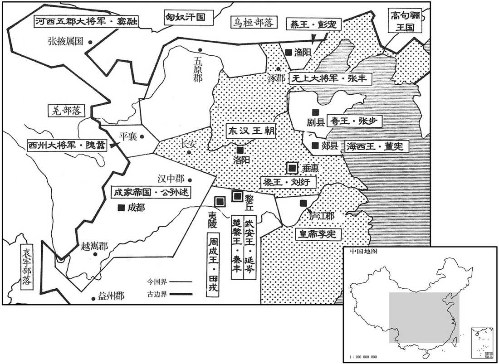
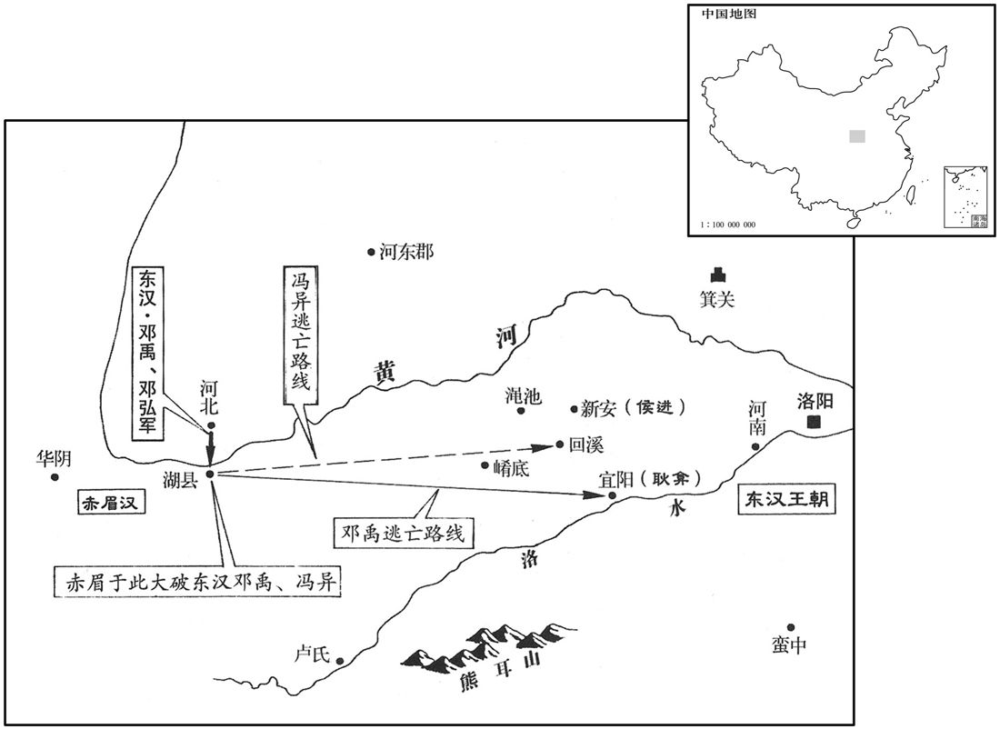
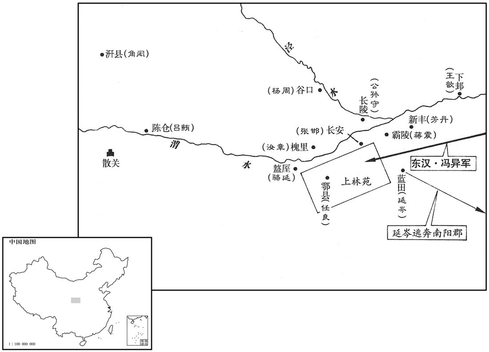
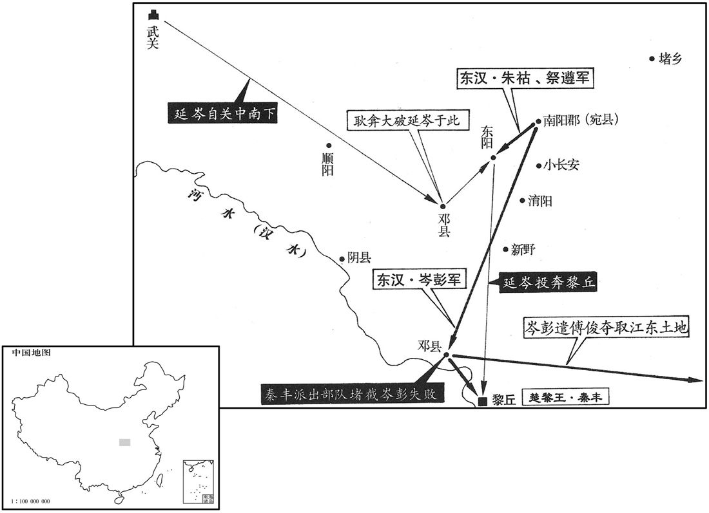
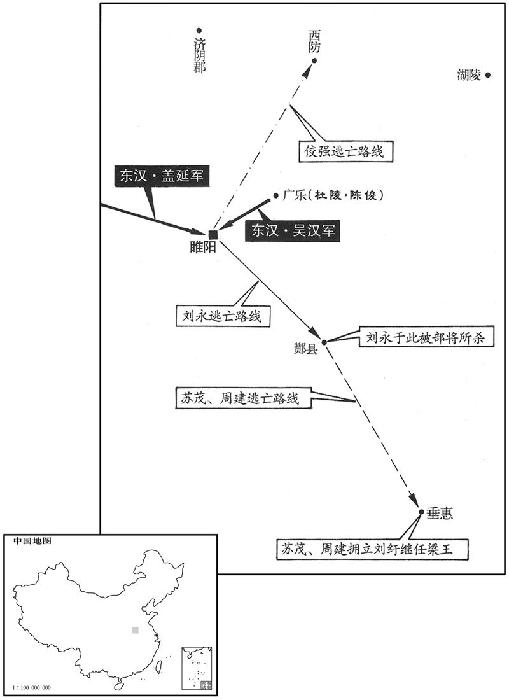
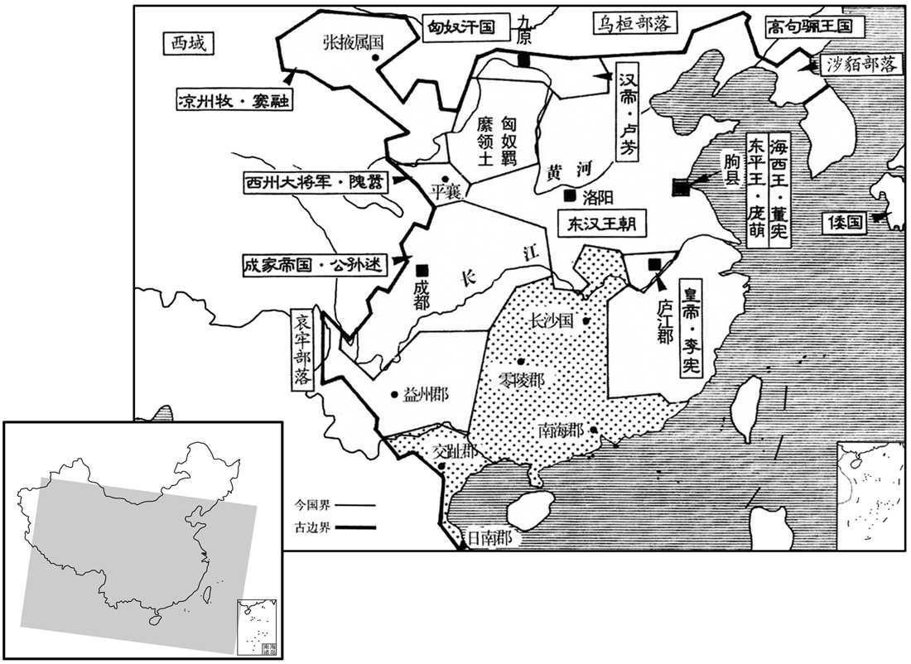
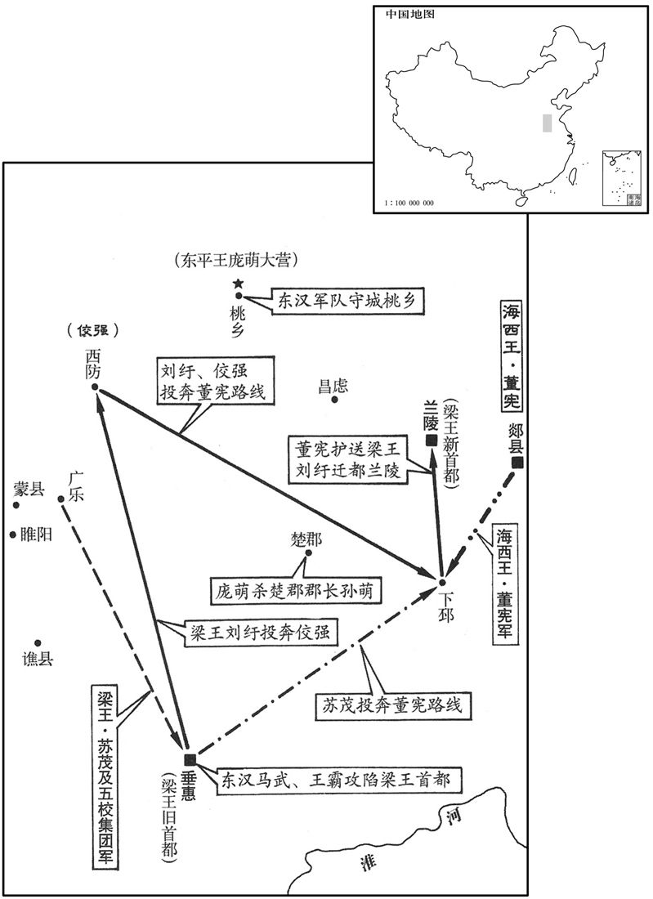
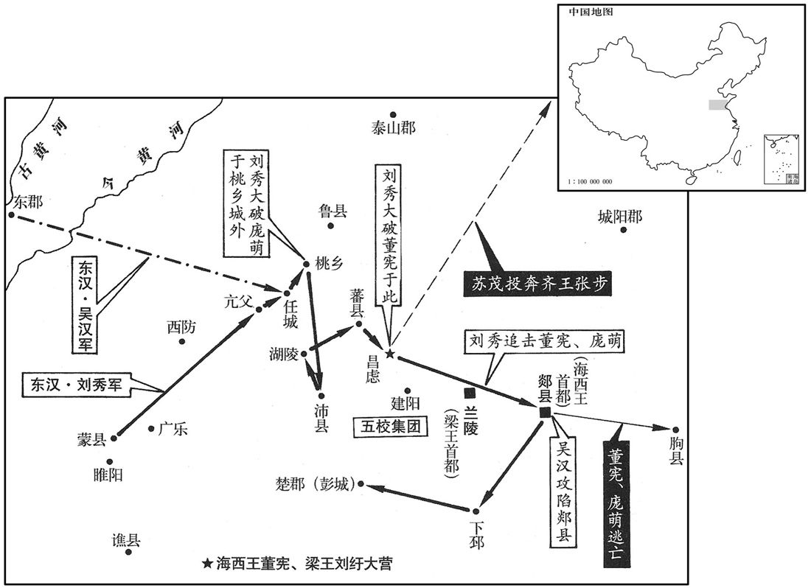
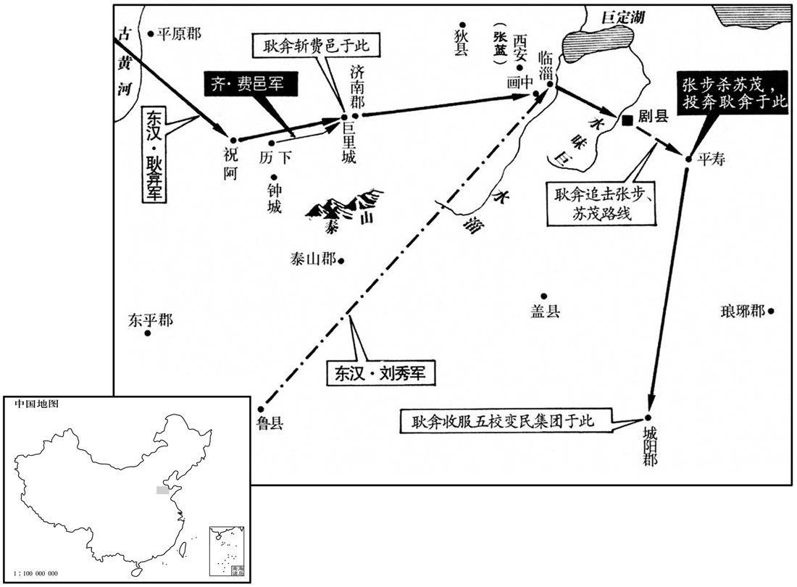

卷次与人物目录 / 卷41
资治通鉴 · 卷第四十一【汉纪三十三】
公元27年至公元29年 · 原文、白话与胡三省注
本页按胡注本编排保存全卷内容。白话采用本站所据译本，未可靠对应的内容另列说明；事件标题用于定位，并非原书文字。
本卷共80段原文，80段有译文对应，0段缺译或待核对。
卷第四十一【汉纪三十三】起强圉大渊献（丁亥），尽屠维赤奋若（己丑），凡三年。
卷首原文与注释
世祖光武皇帝上之下
公元27年 · 汉世祖光武皇帝建武三年
建武三年〔（丁亥、二七）〕
本年事件索引（现代整理）
春，正月，甲子，以冯异为征西大将军。〔晋书职官志曰：四征起于汉代，谓此。〕邓禹凓于受任无功，数以饥卒徼赤眉战，辄不利；〔数，所角翻。徼，一遥翻。〕乃率车骑将军邓弘等自河北度至湖，〔地理志，河北县，属河东郡。湖县，属京兆。贤曰：湖县故城在今虢州湖城县西南。〕要冯异共攻赤眉。〔要，一遥翻；下同。〕异曰：「异与贼相拒数十日，虽虏获雄将，余众尚多，可稍以恩信倾诱，难卒用兵破也。〔卒，读曰猝；下猝起同。〕上今使诸将屯渑池，要其东，〔渑，弥兖翻。〕而异击其西，一举取之，此万成计也！」〔十事九成，犹有一不中。万事万成，言算无遗计也。要，一遥翻。〕禹、弘不从，弘遂大战移日。〔言日景移也。〕赤眉阳败，弃辎重走；〔重，直用翻。〕车皆载土，以豆覆其上，〔覆，敷救翻。〕兵士饥，争取之。赤眉引还，击弘，弘军溃乱；异与禹合兵救之，赤眉小却。异以士卒饥倦，可且休；禹不听，复战，大为所败，〔复，扶又翻。败，补迈翻。〕死伤者三千余人，禹以二十四骑脱归宜阳。异弃马奔〔【章：十二行本「奔」作「步」；乙十一行本同，孔本同；张校同；退斋校同。】〕走，上回溪阪，〔杜佑通典曰：回溪在河南永宁县东北，俗名回坑，长四里，阔二丈，深二丈五尺，自汉以前，道皆由此。郦道元云：曹公西讨，恶南路之险，更开北道。〕与麾下数人归营，收其散卒，复坚壁自守。〔复，扶又翻。〕
春季，正月甲子（初六），刘秀任命冯异为征西大将军。邓禹对于自己身受重任而没有功劳感到惭愧，多次用饥饿的士卒去攻击赤眉军，却总是打败仗。于是他率领车骑将军邓弘等通过河北县抵达湖县，邀冯异和他一起攻打赤眉。冯异说：“我同赤眉对抗数十天，虽然俘虏了他们的干将，但剩下的人数还很多。可逐渐用恩德信义动摇引诱他们，很难一下子就用武力打败。现在皇上派将领们屯驻在渑池，威胁赤眉的东翼，而我攻打赤眉的西翼，一举消灭他们，这是万全之计！”邓禹、邓弘不接受冯异的主张。于是邓弘同赤眉军大战了一整天。赤眉假装战败，丢弃辎重逃走。辎重车上装的全是土，用豆子覆盖在最上面。邓弘的士卒饥饿，争着去取豆子。赤眉军乘机返回，攻打邓弘，邓弘的军队大乱。冯异和邓禹联合起来救助邓弘，赤眉军稍稍退却。冯异认为士兵们又饿又累，应该暂且休息。邓禹不听，又去交战，被赤眉打得大败，死伤三千余人。邓禹带着二十四名骑兵逃出战场回到宜阳。冯异抛弃战马奔逃，上了回阪，和部下数人回到营寨，招集离散的士兵，重新固垒自保。

本年形势与背景参考图
辛巳，立四亲庙于雒阳，祀父南顿君以上至舂陵节侯。〔礼，天子立亲庙四；今依以立舂陵节侯、郁林太守、巨鹿都尉、南顿令庙。〕
辛巳（二十三日），刘秀在洛阳建立四亲祭庙。祭祀父亲南顿君，往上直到高祖父舂陵节侯。
壬午，大赦。
壬午（二十四日），大赦天下。
闰月，乙巳，邓禹上大司徒、梁侯印绶；〔上，时掌翻；下同。〕诏还梁侯印绶，以为右将军。
闰月乙巳（十八日），邓禹呈上大司徒、梁侯的印信绶带。刘秀下诏还给邓禹梁侯的印信绶带，任命他为右将军。
冯异与赤眉约期会战，使壮士变服与赤眉同，伏于道侧。旦日，赤眉使万人攻异前部，异少出兵以救之；〔所以示弱也。〕贼见势弱，遂悉众攻异，异乃纵兵大战。日昃，贼气衰，伏兵卒起，衣服相乱，赤眉不复识别，〔卒，读曰猝。复，扶又翻。别，彼列翻。〕众遂惊溃；追击，大破之于崤底，〔崤谷之底也。贤曰：即崤阪也，在今洛州永宁县西北。〕降男女八万人。〔降，户江翻。〕帝降玺书劳异曰：〔劳，力到翻。〕「始虽垂翅回溪，终能奋翼渑池，可谓失之东隅，收之桑榆。〔贤曰：淮南子曰：至于衡阳，是谓隅中。又前书谷永曰：太白出西方，六十日，法当参天；今已过期，尚在桑榆间。桑榆，谓晚也。余按淮南子曰：西日垂景在树端，谓之桑榆。〕方论功赏，以答大勋。」
冯异同赤眉军定好日期会战。他挑选精壮的士兵，让他们改换服装，穿戴和赤眉军一样，在路边埋伏下来。第二天，赤眉派出一万人攻击冯异军的前部，冯异出动少数军队救援。赤眉见冯异军势弱，于是全军进攻冯异，冯异这才发兵同赤眉军大战。到太阳偏西，赤眉军士气衰落，路边的伏兵突然杀出来，因衣服混杂，赤眉军不能再辨别谁是自己人，于是惊恐溃散。冯异军追击，在崤底大败赤眉军，收降赤眉军男女八万人。刘秀下诏书慰劳冯异说：“你虽然开始时在回阪垂下翅膀，但最终能在渑池奋起双翼。可以说早上在东方丢了东西，晚上在西方找回来。正在为你论功行赏，以报答你卓越的功勋。”

赤眉余众东向宜阳。甲辰，帝亲勒六军，严陈以待之。〔陈，读曰阵。〕赤眉忽遇大军，惊震不知所谓，乃遣刘恭乞降曰：「盆子将百万众降陛下，何以待之﹖」帝曰：「待汝以不死耳！」丙午，盆子及丞相徐宣以下三十余人肉袒降，上所得传国玺绶。〔玺，斯氏翻。绶，音受。〕积兵甲宜阳城西，与熊耳山齐。〔贤曰：宜阳县故城，韩国城也，在今洛州福昌县东。水经注曰：洛水之北有熊耳山，双峦竞举，状同熊耳；在宜阳西。宋白曰：宜阳故城，在福昌县东十三里。〕赤眉众尚十余万人，帝令县厨皆赐食。〔宜阳县厨也。〕明旦，大陈兵马临雒水，〔帝改「洛」为「雒」。〕令盆子君臣列而观之。帝谓樊崇等曰：「得无悔降乎﹖朕今遣卿归营，勒兵鸣鼓相攻，决其胜负，不欲强相服也。」〔强，其两翻。〕徐宣等叩头曰：「臣等出长安东都门，君臣计议，归命圣德。百姓可与乐成，难与图始，〔乐，音洛。〕故不告众耳。今日得降，犹去虎口归慈母，诚欢诚喜，无所恨也！」帝曰：「卿所谓铁中铮铮，佣中佼佼者也！」〔贤曰：说文曰：铮铮，金也。铁之铮，言微有刚利也。铮，初耕翻。佼，古巧翻。诗，佼人僚兮。今相传胡巧翻。言佼佼者，凡庸之人稍为胜也。〕戊申，还自宜阳。帝令樊崇等各与妻子居雒阳，赐之田宅。其后樊崇、逢安反，诛；杨音、徐宣卒于乡里。帝怜盆子，以为赵王郎中；〔赵王良，帝叔父也。以盆子为其国郎中。〕后病失明，赐荥阳均输官地，使食其税终身。〔贤曰：均输，官名，属司农。桓宽盐铁论云：郡国诸侯各以其方物贡输往来，物多苦恶，不偿其费，故郡国置均输官以相绍运，故曰均输。〕刘恭为更始报仇，杀谢禄，〔禄杀更始事见上卷元年。为，于伪翻。〕自系狱；帝赦不诛。
赤眉军残部向东方的宜阳移动。甲辰（十七日），刘秀亲率大军，严阵以待。赤眉突然遇到大军，震惊得不知所措。于是，刘盆子派刘恭向刘秀乞降，说：“我率领百万部众投降陛下，陛下怎样对待呢？”刘秀说：“饶恕你不死罢了！”丙午（十九日），刘盆子和丞相徐宣及以下三十余人袒露出臂膀投降，献出所得的传国玉玺和绶带。赤眉的兵器堆积在宜阳城西，和熊耳山一样高。赤眉部众还有十余万人，刘秀命令宜阳县厨房赐给所有的人食物。第二天，刘秀在洛水边陈列大军，命刘盆子君臣排队观看。刘秀对樊崇等人说：“该不会后悔投降吧？我今天送你们回营，统率军队鸣起战鼓再战，一决胜负。不想强迫你们服输。”徐宣等叩头说：“我们走出长安东都门，君臣商议，要把自己的生命交给陛下。可以和百姓同享受成果，难以和他们同谋开端，所以没有告诉众人。今天能够投降，就像离开虎口，回到慈母的怀抱，确实欢乐欣喜，没有什么可遗憾的！”刘秀说：“你就是所谓铁中的刚利部分，凡人中的出类拔萃者！”戊申（二十日），刘秀从宜阳返回洛阳。他让樊崇等人各自偕妻子儿女住在洛阳，赐给他们田地和住宅。后来樊崇、逢安谋反，被诛杀。杨音、徐宣在他们的故乡去世。刘秀可怜刘盆子，任命他当赵王刘良的郎中。后来刘盆子患病，双目失明，刘秀把荥阳均输官掌握的国有土地赏赐给他，使他终身以收取地租为生。刘恭替刘玄报仇，杀了谢禄，自己投入临狱。刘秀赦免了他，不予诛杀。
二月，刘永立董宪为海西王。〔贤曰：海西县，属琅邪郡。〕永闻伏隆至剧，〔地理志，剧县，属北海郡；春秋纪国之地。杜佑曰：汉剧县故城，在寿光县南。〕亦遣使立张步为齐王。步贪王爵，犹豫未决。隆晓譬曰：「高祖与天下约，非刘氏不王；今可得为十万户侯耳！」步欲留隆，与共守二州；〔二州，青州、徐州也。〕隆不听，求得反命，步遂执隆而受永封。隆遣间使上书曰：〔间，古苋翻。使，疏吏翻。〕「臣隆奉使无状，〔贤曰：言罪大也。〕受执凶逆；虽在困阨，授命不顾。又，吏民知步反畔，心不附之，愿以时进兵，无以臣隆为念！臣隆得生到阙廷，受诛有司，此其大愿。若令没身寇手，以父母、昆弟长累陛下。〔贤曰：累，托也，音力伪翻。〕陛下与皇后、太子永享万国，与天无极！」帝得隆奏，召其父湛，流涕示之，曰：「恨不且许而遽求还也！」其后步遂杀之。帝方北忧渔阳，南事梁、楚，故张步得专集齐地，据郡十二焉。〔步据城阳、琅邪、高密、胶东、东莱、北海、齐、千乘、济南、平原、泰山、菑川十二郡。〕
二月，刘永封董宪为海西王。刘永听说伏隆到达剧县，便也派遣使者封张步为齐王。张步贪图王爵，犹豫不决。伏隆解释说：“高祖曾向天下规定，除刘姓皇族外不能封王爵，现在你仅能成为做十万户侯罢了！”张步想留下伏隆，与他共同据守青、徐二州。伏隆不同意，要求能返回洛阳报告情况。于是张步拘捕伏隆而接受刘永的封爵。伏隆派密使上书说：“我奉命出使，不能完成使命，被叛逆拘捕，处于险境。我虽然身处艰难窘迫之中，但为完成陛下授予的使命，即使牺牲生命，也在所不惜。再有，官民们知道张步叛变，民心不能归附。希望陛下及时进军，不要顾念我。我能够活着回到朝廷，被主管官吏诛杀，这是我最大的愿望。假如我死于叛贼之手，就把父母兄弟长期托付给陛下。祝福陛下和皇后、太子永远享受万国的拥戴，同上天一样无穷无尽！”刘秀得到伏隆的奏书，召见他的父亲伏湛，流着眼泪把奏书拿给他看，说：“我恨不得暂且许诺张步封王而马上求得伏隆返回！”后来，张步终于杀了伏隆。当时，刘秀北方担心渔阳，南方担心梁国、楚国，所以张步能够独霸齐地，占据十二个郡。
帝幸怀。
刘秀到达怀县。
吴汉率耿弇、盖延击青犊于轵西，大破降之。〔贤曰：轵县，属河内郡；故城在今洛州济源县东南。盖，古盍翻。〕
吴汉率领耿、盖延在轵县西攻打青犊军，大破青犊军并使之归降。
三月，壬寅，以司直伏湛为大司徒。
三月壬寅（十六日），刘秀提拔司直伏湛当大司徒。
涿郡太守张丰反，〔郡国志：涿郡，在雒阳东北千八百里。〕自称无上大将军，与彭宠连兵。朱浮以帝不自征彭宠，上疏求救。诏报曰：「往年赤眉跋扈长安，〔贤曰：跋扈，犹言暴横也。〕吾策其无谷必东；果来归附。今度此反虏，〔度，徒洛翻。〕势无久全，其中必有内相斩者。今军资未充，故须后麦耳！」〔须，待也。〕浮城中粮尽，人相食，会耿况遣骑来救，浮乃得脱身走，蓟城遂降于彭宠。〔考异曰：朱浮传：「尚书令侯霸奏：『浮败乱幽州，构成宠罪，徒劳军师，不能死节，罪当伏诛。』」按霸明年乃为尚书令，盖追劾之。〕宠自称燕王，攻拔右北平、上谷数县，赂遗匈奴，〔遗，于季翻。〕借兵为助；又南结张步及富平、获索诸贼，皆与交通。
涿郡太守张丰反叛，自称无上大将军，和彭宠的军队联合起来。朱浮因为刘秀不亲自讨伐彭宠，向刘秀上书求援。刘秀下诏回答说：“去年赤眉军在长安飞扬跋扈，我叛定他们在没有粮食的时候一定向东撤。后果然前来归顺。现在估计这些叛逆，势必不能长期保全，他们内部一定会出现互相斩杀的情况。现在我军的军事物资不充足，所以要等小麦收割以后才行。”朱浮所在的蓟城粮食吃尽，出现了人吃人的现象，正赶上耿况派骑兵来救援，朱浮才能够脱身逃跑。于是蓟城向彭宠投降。彭宠自称为燕王，进攻夺取右北平、上谷的几个县。他还送礼物贿赂北方的匈奴，向匈奴借兵作为援军，又向南结交张步及富平、获索各路贼军，与他们全都建立了联系。
帝自将征邓奉，至堵阳；〔堵阳县，属南阳郡。杜佑曰：唐州方城县，汉堵阳县。应劭曰：堵阳，景帝改为顺阳。二说不同。〕奉逃归淯阳，董欣降。〔欣，音欣。降，下江翻；下同。〕夏，四月，帝追奉至小长安，与战，大破之；奉肉袒因朱祜降。〔去年奉禽祜，今因祜而降。〕帝怜奉旧功臣，〔奉，邓晨之兄子也。〕且衅起吴汉，〔事见上卷上年。〕欲全宥之。岑彭﹑耿弇谏曰：「邓奉背恩反逆，〔背，蒲妹翻。〕暴师经年，陛下既至，不知悔善，而亲在行陈，〔陈，读曰阵。〕兵败乃降；若不诛奉，无以惩恶！」于是斩之。复朱祜位。
刘秀亲自率军讨伐邓奉，抵达堵阳。邓奉逃回阳，董投降。夏季，四月，刘秀追击邓奉到小长安，同邓奉交战，大败邓奉。因朱祜从中调和，邓奉露出臂膀投降。刘秀怜惜邓奉是功臣故旧，而且反叛是因吴汉所逼，想要保全宽恕他。岑彭、耿进谏说：“邓奉背叛恩主，起兵叛变，一连几年残暴掳掠。陛下亲征抵达堵阳，他不知悔过从善，反而亲自上阵和您交战，打败了才被迫投降。如果不杀邓奉，就不能惩办邪恶。”于是，斩邓奉，恢复朱祜的官职。
延岑既破赤眉，即拜置牧守，欲据关中。时关中众寇犹盛，岑据蓝田，王歆据下邽，〔贤曰：秦武公伐邽戎置，以陇西有上邽，故此云下。〕芳丹据新丰，〔芳，姓也。风俗通有汉幽州刺史芳乘。〕蒋震据霸陵，张邯据长安，公孙守据长陵，杨周据谷口，吕鲔据陈仓，角闳据汧，〔角，姓也，汉有角善叔。汧，苦坚翻。〕骆延据盩厔，〔盩厔，音舟窒。姓谱：齐太公之后有公子骆，子孙以为氏。史记，秦之先有大骆。〕任良据鄠，〔鄠，音户。〕汝章据槐里，〔汝，姓也。商有汝鸠、汝方。春秋，晋有汝齐、汝宽。〕各称将军，拥兵多者万余人，少者数千人，转相攻击。冯异且战且行，屯军上林苑中。〔异自崤谷之胜，引兵而西，且战且行，进屯上林苑中。〕延岑引张邯、任良共击〔【章：十二行本「击」作「攻」；乙十一行本同；孔本同。】〕异；异击，大破之，诸营保附岑者皆来降，〔保，与堡同。〕岑遂自武关走南阳。〔走，音奏。〕时百姓饥饿，黄金一斤易豆五升，道路断隔，委输不至，〔委，于伪翻。输，舂遇翻。〕冯异军士悉以果实为粮。诏拜南阳赵匡为右扶风，将兵助异，并送缣、谷。异兵谷渐盛，乃稍诛击豪杰不从令者，褒赏降附有功劳者，悉遣诸营渠帅诣京师，〔帅，所类翻。〕散其众归本业，威行关中。唯吕鲔、张邯、蒋震遣使降蜀，〔鲔，于轨翻。邯，下甘翻。〕其余悉平。
延岑打败赤眉军以后，即刻任命州牧郡守等官职，打算占据关中。当时关中地区各路盗贼气势还很旺盛。延岑占据蓝田，王歆占据下，芳丹占据新丰，蒋震占据霸陵，张邯占据长安，公孙守占据长陵，杨周占据谷口，吕鲔占据陈仓，角闳占据，骆延占据，任良占据，汝章占据槐里。他们各称将军，拥有士兵，多的一万余人，少的数千人，各军之间互相攻击。冯异一边作战，一边向前推进，军队屯驻于上林苑中。延岑联合张邯、任良一起攻打冯异，冯异迎击，大败延岑等联军，归附延岑的营垒都来投降冯异，延岑于是从武关向南阳逃跑。当时百姓饥饿，用一斤黄金才换五升豆子。道路断绝，运送的粮食不能到达，冯异的士兵都以果实充饥。刘秀下诏任命南阳人赵匡当右扶风，率军协助冯异，并运送绢帛、粮食。冯异的军队逐渐强盛，粮食渐渐充足，于是逐步诛杀打击不服从命令的豪强，褒扬奖赏归降有功劳的人，把各营寨的首领全都送到洛阳，遣散他们的徒众，使徒众回到各自本来的行业，冯异威振关中。只有吕鲔、张邯、蒋震派出使者投降了占据西蜀的公孙述，其余全部平定。

吴汉率骠骑大将军杜茂等七将军围苏茂于广乐；周建招集得十余万人救之。〔周建，刘永将也。〕汉迎与之战，不利，堕马伤彣，还营；〔彣，与膝同。〕建等遂连兵入城。诸将谓汉曰：「大敌在前，而公伤卧，众心惧矣！」〔三军之气，以将为主，故云然。〕汉乃勃然裹创而起，〔创，初良翻。〕椎牛飨士，慰勉之，士气自倍。旦日，苏茂、周建出兵围汉；汉奋击，大破之，茂走还湖陵。睢阳人反城迎刘永，盖延率诸将围之；〔反，音幡。盖，古盍翻。〕吴汉留杜茂、陈俊守广乐，自将兵助延围睢阳。〔睢，音虽。〕
吴汉率领骠骑大将军杜茂等七位将军在广乐包围苏茂。周建招集到十余万人援救苏茂。吴汉迎战周建，不能取胜，从马上摔下，膝盖受伤，回到大营。于是周建等带兵进城。将领们对吴汉说：“大敌当前，而您受伤躺在床上，大家心里感到恐惧。”吴汉于是包扎伤口，勃然而起，杀牛犒劳战士，慰问勉励他们，军中士气倍增。第二天，苏茂、周建出兵包围吴汉，吴汉奋力反击，大败敌军。苏茂逃回湖陵。这时，睢阳人在城内叛乱，迎接刘永进城。东汉大将盖延率众将领包围睢阳。吴汉留下杜茂、陈俊守卫广乐，自己带兵协助盖延包围睢阳。
乙卯晦，日有食之。
乙卯晦（三十日），出现日食。
延岑攻南阳，得数城；建威大将军耿弇与战于穰，〔地理志，穰县，属南阳郡。〕大破之。岑与数骑走东阳，与秦丰合；丰以女妻之。〔走，音奏。妻，七细翻。〕建义大将军朱祜率祭遵等与岑战于东阳，破之；〔贤曰：东阳，聚名也；故城在今邓州南。临淮郡复有东阳县，非此地也。余据郡国志，南阳淯阳县有东阳聚。〕岑走归秦丰。祜遂南与岑彭等军合。
延岑进攻南阳，夺取了几座城。东汉建威大将军耿同延岑在穰城交战，大败延岑。延岑和几个人骑马逃向东阳，与秦丰联合。秦丰把女儿嫁给延岑。东汉建义大将军朱祜率领祭遵等同延岑在东阳交战，打败延岑。延岑逃跑回到秦丰所在的黎丘。于是朱祜南下与岑彭等军队汇合。

延岑护军邓仲况拥兵据阴县，〔贤曰：阴县，属南阳郡；故城在今襄州谷城县界北。水经注：沔水南径谷城东，又南过阴县西。宋白曰：今光化军，本阴县地。〕而刘歆孙龚为其谋主。前侍�之葹溺炯�以书说之，〔前此帝尝用竟为侍中。说，输芮翻。〕仲况与龚降。竟终不伐其功，隐身乐道，寿终于家。〔乐，音洛。〕
延岑的护军邓仲况领兵占据阴县，而刘歆的孙子刘龚是他的主要谋士，前侍中扶风人苏竟写信劝说他们。邓仲况与刘龚便投降了刘秀。苏竟始终不夸耀这份功劳，隐退故里，乐守圣人之道，在家乡寿终。
秦丰拒岑彭于邓，〔地理志，邓县，属南阳郡；春秋之邓国也。〕秋，七月，彭击破之。进围丰于黎丘，别遣积弩将军傅俊将兵徇江东，扬州悉定。
秦丰在邓县抗拒岑彭。秋季，七月，岑彭击败秦丰。又进军在黎丘包围秦丰，另外派遣积弩将军傅俊领兵攻占长江以东地区，扬州全部平定。
盖延围睢阳百日，刘永、苏茂、周建突出，将走酇；〔此沛郡之酇县也。贤曰：今亳州县；音在何翻。〕延追击之急，永将庆吾斩永首降。〔姓谱：齐大夫庆氏之后。〕苏茂、周建奔垂惠，〔郡国志：沛郡山桑县有垂惠聚。贤曰：在今亳州山桑县西北，一名礼城。杜佑通典曰：垂惠聚在亳州蒙城县西北。〕共立永子纡为梁王。佼强奔保西防。〔佼，古巧翻，又音鹈。〕
盖延包围睢阳达一百天。刘永、苏茂、周建突围而出，准备逃往县。盖延急速追击，刘永的将领庆吾砍下刘永的人头投降。苏茂、周建逃到垂惠，一齐拥立刘永的儿子刘纡当梁王。刘永的另一将领佼强逃到西防据守。

冬，十月，壬申，上幸舂陵，祠园庙。〔舂陵节侯以下四世园庙也。〕
冬季，十月壬申（十九日），刘秀到达故乡舂陵，祭祀祖先的陵园祭庙。
耿弇从容言于帝，〔从，千容翻。〕自请北收上谷兵未发者，定彭宠于渔阳，取张丰于涿郡，还收富平、获索，东攻张步，以平齐地。帝壮其意，许之。
耿从容地向刘秀说，他请求北上招收上谷郡还没有调动的士兵，在渔阳铲除彭宠，在涿郡打败张丰；返回洛阳时消灭富平、获索军；向东攻击张步，从而平定齐地。刘秀认为他很有雄心壮志，答应了他的要求。
帝谓太中大夫来歙曰：〔姓谱：郲，子姓，商之支孙，食采于郲，因以为氏；后避难去邑。汉功臣表有轪侯来苍。歙，许及翻。〕「今西州未附，〔西州，谓隗嚣也。〕子阳称帝，〔子阳，公孙述字。〕道里阻远，诸将方务关东，思西州方略，未知，未知所在。」〔【章：十二行本「在」下有「奈何」二字；乙十一行本同；孔本同；张校同。】〕歙曰：「臣尝与隗嚣相遇长安。其人始起，以汉为名。〔事见三十九卷更始元年。〕臣愿得奉威命，开以丹青之信，〔扬子曰：圣人之言，炳若丹青。〕嚣必束手自归；则述自亡之势，不足图也！」帝然之，始令歙使于嚣。〔使，疏吏翻；下同。〕嚣既有功于汉，又受邓禹爵署，〔事见上卷元年。〕其腹心议者多劝通使京师，嚣乃奉奏诣阙。帝报以殊礼，言称字，用敌国之仪，所以慰藉之甚厚。〔贤曰：慰，安也。藉，荐也。言安慰而荐藉之也。〕
刘秀对太中大夫来歙说：“现在西州没有归附，公孙述自称皇帝，道路阻塞遥远，将领们正把力量用在关东。思量攻相西州的策略，不知道怎么办好。”来歙说：“我曾经和隗嚣在长安会见。这个人最初起兵时，以恢复汉王朝为名义。我请求奉陛下之命，开诚布公，他一定会束手归附。那样的话，公孙述会处于自亡的境地，不值得费力图谋了！”刘秀同意来歙的话，便派他出使去见隗嚣。隗嚣既对更始朝建有功勋，又接受东汉大司徒邓禹任命的官职。他的心腹以及谋士们多劝他和洛阳取得联系。于是隗嚣到洛阳奉上奏章。刘秀用特殊的礼仪进行回报，交谈时对隗嚣用表字，用对待地位平等国家的礼仪相待，安慰推许他，充满了深情厚谊。
译本中未与胡注本可靠对应的内容
以下另列供核对版本差异，不并入胡注本正文。
译本所附古文
[14]车驾自小长安引还，令岑彭率傅俊、臧宫、刘宏等三万余人南击秦丰。五月，己酉，车驾还宫。
译本白话
刘秀从小长安率军返回。命令岑彭率领傅俊、臧宫、刘宏等三万余人向南攻打秦丰。五月己酉（二十四日），刘秀回到洛阳皇宫。
译本所附古文
[16]六月，壬戌，大赦。
译本白话
六月壬戌（初七），大赦天下。
译本所附古文
[21]十一月，乙未，帝还自舂陵。
译本白话
十一月乙未（十二日），刘秀从舂陵返回。
译本所附古文
[22]是岁，李宪称帝，置百官，拥九城，众十余万。
译本白话
这一年，李宪在庐江称帝，设置百官，拥有九座城，部众十余万人。
公元28年 · 汉世祖光武皇帝建武四年
四年〔（戊子、二八）〕
本年事件索引（现代整理）
正月，甲申，大赦。
正月甲申（初二），刘秀实行大赦。

本年形势与背景参考图
二月，壬子，上行幸怀；壬申，还雒阳。
二月壬子（初一），刘秀前往怀县。壬申（十一日），返回洛阳。
延岑复寇顺阳；〔郡国志，顺阳县属南阳郡。顺水东南入蔡。括地志：顺阳故城，在邓州穰县西三十里，楚之郇邑也。复，扶又翻；下同。〕遣邓禹将兵击破之。岑奔汉中；公孙述以岑为大司马，封汝宁王。
延岑又攻打顺阳。刘秀派邓禹率领军队击败延岑。延岑逃往汉中。公孙述任命延岑当大司马，封为汝宁王。

田戎闻秦丰破，恐惧，欲降。〔降，户江翻；下同。〕其妻兄辛臣图彭宠、张步、董宪、公孙述等所得郡国以示戎曰：「雒阳地如掌耳，〔如掌，喻其狭也。〕不如且按甲以观其变。」戎曰：「以秦王之强，犹为征南所围，吾降决矣！」〔岑彭时为征南大将军，故戎云然。〕乃留辛臣使守夷陵，自将兵沿江泝沔上黎丘。〔自夷陵沿江而下，至沔口；自沔口泝沔而上，可至黎丘也。上，时掌翻。〕辛臣于后盗戎珍宝，从间道先降于岑彭，〔间，古苋翻。〕而以书招戎曰：「宜以时降，无拘前计！」戎疑臣卖己，灼龟卜，降兆中坼，〔周礼菙氏：凡卜，以明火爇燋，吹其焌，契以授卜师。郑玄曰：燋焌，用荆菙之类。兆者，灼龟，发于火，其形可占者。菙，时髓翻。燋，哉约翻。焌，音俊，又子寸翻。〕遂复反，与秦丰合；岑彭击破之，戎亡归夷陵。
田戎听说秦丰被打败，感到恐慌，准备投降。田戎妻子的哥哥辛臣画出彭宠、张步、董宪、公孙述等占有的郡国给田戎看，对他说：“洛阳这块地方，不过像手掌那么大罢了，我们不如暂且按兵不动，以观察局势的变化。”田戎说：“凭着秦丰的强盛，还陷于征南大将军岑彭的包围之中，我决心投降了！”于是留下辛臣，让他守卫夷陵，自己率领军队沿着长江至 沔江，逆流而上进军黎丘。辛臣在田戎出发后，盗取田戎的珍宝，抄小路逃跑，先向岑彭投降，然后写信招降田戎说：“你应该及时投降，不要拘泥于我们以前的打算！”田戎怀疑辛臣出卖自己，烧龟甲占卜应否投降。龟甲从中裂开，大凶。于是又进行反叛，同秦丰联合。岑彭打败田戎，田戎逃回夷陵。
夏，四月，丁巳，上行幸邺；己巳，幸临平，〔贤曰：县名，属巨鹿郡，故城在今定州鼓城县东南。〕遣吴汉、陈俊、王梁击破五校于临平。鬲县五姓共逐守长，据城而反；〔贤曰：鬲县属平原郡，故城在今德州西北。五姓，盖当土强宗豪右。鬲，音革。余谓守长者，守鬲县长，非正官也。长，知两翻；下同。〕诸将争欲攻之。吴汉曰：「使鬲反者，守长罪也。敢轻冒进兵者斩！」乃移檄告郡使收守长，而使人谢；城中五姓大喜，即相率降。诸将乃服，曰：「不战而下城，非众所及也！」
夏季，四月丁巳（初七），刘秀前往邺城。己巳（十九日），前往临平。派遣吴汉、陈俊、王梁在临平击败五校军。鬲县五大家族联合起兵，驱逐代理县长，占据县城反叛。将领们争先恐后地要前去攻打。吴汉说：“促使鬲县人反叛的，是代理县长的罪过。胆敢轻率进兵的，一律斩首！”于是用公文通告郡府拘捕代理县长，并派人酬谢。城中五大家族非常高兴，立刻相继投降。将领们于是佩服吴汉，说：“不经过战斗就能得到城池，这种本领不是一般人所能赶得上的！”
五月，上幸元氏；辛巳，幸卢奴，将亲征彭宠。伏湛谏曰：「今兖、豫、青、冀，中国之都，而寇贼从横，未及从化。〔从，子容翻。〕渔阳边外荒耗，〔边外者，边于外夷也。〕岂足先图！陛下舍近务远，弃易求难，〔易，以豉翻。〕诚臣之所惑也！」上乃还。
五月，刘秀前往元氏。辛巳（初一），抵达卢奴，准备亲自征讨彭宠。伏湛劝阻说：“现在，兖州、豫州、青州、冀州本是中国的内地，而盗匪贼寇横行无忌，还没有来得及使他们顺从，接受教化。渔阳不过是临近北方外族的荒凉地方，怎么值得先去图谋呢？陛下舍近求远，放弃容易做的事，去做难做的事，真使我感到迷惑！”刘秀这才返回。
帝遣建议〔【章：十二行本「议」作「义」；乙十一行本同；孔本同。】〕大将军朱祜、建威大将军耿弇、征虏将军祭遵、〔祭，侧界翻。〕骁骑将军刘喜讨张丰于涿郡。祭遵先至，急攻丰；禽之。初，丰好方术，有道士言丰当为天子，〔西都有方士，东都因称为道士。好，呼到翻。〕以五彩囊裹石系丰肘，云「石中有玉玺」。丰信之，遂反。既执，当斩，犹曰「肘石有玉玺」。傍人为椎破之，〔为，于伪翻；下同。〕丰乃知被诈，仰天叹曰：「当死无恨！」
刘秀派遣建议大将军朱祜、建威大将军耿、征虏将军祭遵、骁骑将军刘喜在涿群讨伐张丰。祭遵先行到达，猛烈攻打张丰，把他生擒。当初，张丰喜好法术，有个道士说张丰会做皇帝，并用五彩的口袋包裹石头绑在张丰的肘上，说：“石头中有皇帝用的玉玺。”张丰相信道士的话，于是叛变。把他捉住以后，应当斩首，他还说：“我肘上的石头里有玉玺。”旁人为他用槌子打破石头，张丰才知受骗了。他仰天长叹说：“我应当死，死而无恨！”
上诏耿弇进击彭宠。弇以父况与宠同功，〔况与宠同有助汉之功，事见上卷、三十九卷更始二年。〕又兄弟无在京师者，不敢独进，求诣雒阳。诏报曰：「将军举宗为国，功效尤着，何嫌何疑，而欲求征！」况闻之，更遣弇弟国入侍。时祭遵屯良乡，刘喜屯阳乡，〔贤曰：良乡、阳乡，皆县名，并属涿郡。阳乡故城，在今幽州故安县西北。宋白曰：良乡，在燕为中都，汉为良乡县。〕彭宠引匈奴兵欲击之，耿况使其子舒袭破匈奴兵，斩两王，宠乃退走。
刘秀颁下诏书，命令耿进攻彭宠。耿因为父亲耿况和彭宠有同样的功劳，再加上兄弟没有人在洛阳做人质，不敢单独进军，请求返回洛阳。刘秀下诏回答说：“将军全家为国效忠，功劳卓著，有什么嫌疑而要求征召回洛阳呢？”耿况听说以后，另外派耿的弟弟耿国前往洛阳，到宫廷服务。这时，祭遵驻屯良乡，刘喜驻屯阳乡，彭宠率领匈奴的军队准备袭击。耿况命他的儿子耿舒击败匈奴军，诛杀匈奴两位亲王，彭宠这才退兵。
秋，七月，丁亥，上幸谯，〔考异曰：袁纪，「六月幸谯」，今从范书。〕遣捕虏将军马武、骑都尉王霸围刘纡、周建于垂惠。
秋季，七月丁亥（初八），刘秀到谯城。派遣捕虏将军马武、骑都尉王霸在垂惠包围刘纡、周建。
董宪将贲休以兰陵降；〔贤曰：前书贲赫，音肥。今姓作贲，音奔。兰陵县，属东海郡；故城在今沂州丞县东。〕宪闻之，自郯围之。〔贤曰：郯县，属东海郡；故城在今泗州下邳县东北。郯，音谈。〕盖延及平狄将军山阳庞萌在楚，〔楚，彭城也。〕请往救之。帝敕曰：「可直往捣郯，〔贤曰：捣，击也。余谓捣，捣虚也；此兵法所谓攻其必救也。〕则兰陵自解。」延等以贲休城危，遂先赴之。宪逆战而阳败退，延等因拔围入城。明日，宪大出兵合围；延等惧，遽出突走，因往攻郯。帝让之曰：「间欲先赴郯者，以其不意故耳！今既奔走，贼计已立，围岂可解乎！」延等至郯，果不能克；而董宪遂拔兰陵，杀贲休。
董宪的将领贲休献出兰陵县投降。董宪得到消息，从郯县率军包围兰陵。盖延与平狄将军山阳人庞萌在楚驻屯，请求前往兰陵救援贲休。刘秀告诫说：“大军可以去直捣郯县，兰陵之围自然就会解除。”盖延等认为贲休所守的兰陵城危险，于是先奔赴兰陵救援。董宪迎战，然后假装战败撤退。盖延等因此攻破围军进城内。第二天，董宪率大军合围。盖延等恐惧，迅速突围逃跑，于是前往攻打郯县。刘秀责备盖延等人说：“先前要进攻郯县，是由于出其不意的缘故罢了！现在既然败逃，敌人的计谋已经确定，怎么还能解除兰陵之围呢！”盖延等到达郯县，果然不能攻克。而董宪终于攻陷兰陵，诛杀贲休。
王莽末，天下乱，临淮大尹河南侯霸独能保全其郡。〔郡国志：临淮郡在雒阳东千四百里。〕帝征霸会寿春，拜尚书令。时朝廷无故典，又少旧臣，〔少，诗沼翻。〕霸明习故事，收录遗文，条奏前世善政法度，施行之。
王莽末年，天下大乱，唯独临淮郡大尹河南人侯霸能够保全一郡平安。刘秀征召侯霸在寿春见面，任命他当尚书令。当时朝廷没有旧法则可依，又缺少旧臣，侯霸熟悉过去的典章制度，搜集失散的文献档案，列出前朝好的政策和法令制度上奏，予以施行。
冬，十月，甲寅，车驾还宫。
冬季，十月甲寅（初七），刘秀返回洛阳。
隗嚣使马援往观公孙述。援素与述同里闬，相善，〔援与述皆茂陵人。说文曰：闬，闾也，侯旰翻。〕以为既至，当握手欢如平生；而述盛陈陛卫以延援入，交拜礼毕，使出就馆。更为援制都布单衣﹑〔何承天纂文曰：都、致、错、履、无极，皆布名。方言曰：襌衣，江、淮、南楚之间谓之褋，关之东西谓之襌衣。为，于伪翻。〕交让冠，会百官于宗庙中，立旧交之位，述鸾旗、旄骑，〔鸾旗注见十三卷文帝元年。旄骑，旄头骑也。秦穆公伐南山大梓，有一青牛出走，入丰水中；其后牛出丰水中，使骑击之，不胜；有骑堕地复上，发解，牛畏之，入不出：故置旄头骑以前驱。〕警跸就车，磬折而入，〔贤曰：磬折，屈身如磬之曲折，敬也。孔颖达曰：磬折者，屈身如磬之折杀。按考工记云：磬氏为磬，倨句一矩有半。郑云：必先度一矩为句，一矩为股，而求其弦。既以一矩有半触其弦，则磬之倨句也。是磬之折杀，其形必曲，人之倚式亦当然也。〕礼飨官属甚盛，欲授援以封侯大将军位。宾客皆乐留，〔乐，音洛。〕援晓之曰：「天下雌雄未定，公孙不吐哺走迎国士，〔周公一饭三吐哺以下天下之士。〕与图成败，反修饰边幅，〔贤曰：言若布帛修整其边幅也。〕如偶人形，此子何足久稽天下士乎！」〔稽，留也。〕因辞归，谓嚣曰：「子阳，井底蛙耳，〔言志识褊狭，如坎井之蛙。〕而妄自尊大！不如专意东方。」〔东方，谓雒阳也。〕
隗嚣派马援前往成都观察公孙述的情况。马援和公孙述是同乡，关系很好，他以为到达之后，公孙述一定像平时那样和他握手言欢。但公孙述让许多卫士排列在殿阶下，戒备森严，然后请马援进入。行过交拜礼之后，公孙述让马援出去，到宾馆休息。又替马援制做布衣服和交让寇。在宗庙中召集百官，设立了旧交老友的座位。公孙述用绣着鸾鸟的旗帜、披头散发的骑士作前导，开路清道，实行警戒，登车出发。他向左向迎侯的官员屈身作答后，进入宗庙。礼仪祭品及百官的阵容十分盛大。公孙述准备封马援侯爵，任命当大将军。马援带领的宾客们都乐意留下来。马援向他们解释说：“天下胜负未定，公孙述不懂得吐出口中的饭，奔走迎接有才干的人，与他共同图谋成败的大事，他反而注重繁琐的小节，就像一个木偶人，这种人怎么能够长久留住天下有志之士呢？”因此告辞返回，对隗嚣说：“公孙述不过是井底之蛙罢了，却妄自尊大！我们不如一心与东方的刘秀往来。”
嚣乃使援奉书雒阳。援初到，良久，中黄门引入。〔中黄门，宦者也；属少府。〕帝在宣德殿南庑下，〔庑，音武，堂下周屋也。〕但帻，坐，迎笑，〔董巴曰：古者有冠无帻，其戴也加首有頍，所以安物。诗曰：有頍者弁，谓此也。秦加武将首饰为绛袙，其后稍稍作颜题。汉兴，续其颜，郄摞之，施巾连题，却覆之，今丧帻是其制也，名之曰帻。帻者，头首严赜也。至孝文，乃高颜题，续之为耳，崇其巾为屋，合后施收，贵贱皆服之。蔡邕曰：帻，古者卑贱执事不冠者之所服。元帝额有壮发，不欲使人见，始进帻服之。〕谓援曰：「卿遨游二帝间；今见卿，使人大凓。」援顿首辞谢，因曰：「当今之世，非但君择臣，臣亦择君矣！臣与公孙述同县，少相善；〔少，诗照翻。〕臣前至蜀，述陛戟而后进臣。〔陛戟，谓卫者持戟侠陛也。〕臣今远来，陛下何知非刺客奸人，而简易若是！」帝复笑曰：「卿非刺客，顾说客耳。」〔说，去声。〕援曰：「天下反复，盗名字者不可胜数；〔盗名字，谓僭窃位号，称帝称王也。易，以豉翻。复，扶又翻。说，输芮翻。胜，音升。〕今见陛下恢廓大度，同符高祖，乃知帝王自有真也。」
于是隗嚣派马援带着给刘秀的信到洛阳去。马援初到，等了很久，中黄门引进。刘秀在宣德殿南面的廊屋里，只戴着头巾，坐在那里，笑迎马援。刘秀对马援说：“您在两个皇帝之间游历，今天见到您，令人非常惭愧。”马援叩头辞谢，于是说：“当今的天下，不但君主选择臣子，臣子也选择君主。我和公孙述同是一县的人，自幼关系很好。我前些时候到成都，公孙述让武士持戟立在殿阶下，然后才接见我。我今天远道而来，您怎么知道我不是刺客或奸恶的人，而这样平易地接见我！”刘秀又笑着说：“您不是刺客，不过是说客罢了。”马援说：“天下大局，反复未定，盗用帝王称号的人不计其数。今天我看见您恢宏大度，和高祖一样，才知道自有真正的天子。”

公孙述聚兵数十万人，积粮汉中；又造十层楼船，多刻天下牧守印章。〔守，式又翻。〕遣将军李育、程乌〔【张：「乌」作「焉」，下同。】〕将数万众出屯陈仓，就吕鲔，将徇辅；冯异迎击，大破之，育、乌俱奔汉中。〔考异曰：公孙述传：「使李育、程乌与吕鲔徇三辅。三年，冯异击鲔、育于陈仓，大败之。」按本纪，「四年，冯与述将程焉战陈仓，破之。」冯异传亦在今年。盖述传误以「四年」为「三年」，「焉」作「乌」耳。〕异还，击破吕鲔，营保降者甚众。
公孙述聚集军队数十万人，在汉中囤积粮食。又建造十层高的楼船，大量刻制天下州郡长官的印章。公孙述派遣将军李育、程焉率领数万军队进军，在陈仓驻屯，去和吕鲔合兵，准备攻占三辅地区。冯异迎击，大败敌军。李育、程焉都逃往汉中。冯异返回，击败吕鲔，有大量营寨投降。
是时，隗嚣遣兵佐异有功，遣使上状，帝报以手书曰：「慕乐德义，思相结纳。〔乐，音洛。〕昔文王三分，犹服事殷，〔孔子曰：三分天下有其二，以服事殷，周之德可谓至德也已矣！〕但驽马、铅刀，不可强扶，〔贤曰：周礼：校人掌六马；驽马，最下者也。说文：铅，青金也，似锡而色青。言驽马、铅刀，不可强扶而用也。强，其两翻。〕数蒙伯乐一顾之价。〔战国策，苏代谓淳于髡曰：人有卖骏马者，比三旦立于市，市人莫之知；往见伯乐曰：臣有骏马，欲卖之，比三旦立市，市人莫与言，愿子还而视之，去而顾之。臣请献一朝之价。伯乐如其言，一旦而价十倍也。数，所角翻。乐，音洛。〕将军南拒公孙之兵，北御羌、胡之乱，〔御，读曰御。〕是以冯异西征，得以数千百人踯躅三辅。〔贤曰：踯躅，犹踟蹰也。毛晃曰：踯躅，跳也。踯，直炙翻。躅，直录翻。〕微将军之助，则咸阳已为他人禽矣！如令子阳到汉中，三辅愿因将军兵马，鼓旗相当。傥肯如言，即智士计功割地之秋也！〔贤曰：秋，一岁中功成之时，故举以为言。〕管仲曰：『生我者父母，成我者鲍子。』〔贤曰：事见史记。〕自今以后，手书相闻，勿用傍人间构之言。」〔间，古苋翻；下同。〕其后公孙述数遣将间出，嚣辄与冯异合势，共摧挫之。述遣使以大司空、扶安王印绶授嚣；〔扶安，谓相扶助而安也。〕嚣斩其使，出兵击之，以故蜀兵不复北出。〔复，扶又翻。〕
当时，隗嚣派遣军队协助冯异作战有功，派使者人给刘秀上书报告情况。刘秀亲笔写信回答说：“因为思慕道德仁义，盼望与将军结交。从前周文王占有天下的三分之二，仍向商朝称臣，但劣马和铅质的刀，不能勉强扶持，我却几次承蒙您这位伯乐看顾一眼的荣耀。您在南方抗拒公孙述的军队，在北方抵御羌、胡外族的骚扰。因此冯异西征，能够仅用数千人在三辅地区周旋。如果没有将军的帮助，咸阳就已被别人占领了。假如公孙述到汉中，三辅地区愿凭借将军的军队和他对抗，使双方力量旗鼓相当。如果您肯像我说的这样做，那就是给智士贤人计算功劳、分封土地的时候！管仲说过：‘生养我的是父母，使我成功的是鲍叔牙。’从今以后，我们之间用亲笔书信互通消息，不要听信别 人挑拨离间的话。”从那以后，公孙述几次派将领秘密出兵，隗嚣都同冯异联合起来，一齐将公孙述军挫败。公孙述派使者将大司空、扶安王的印信绶带授给隗嚣，隗嚣诛杀使者，派出军队攻击。因此公孙述的军队不再向北进攻。
泰山豪杰多与张步连兵。吴汉荐强弩大将军陈俊为泰山太守，击破步兵，遂定泰山。〔郡国志：泰山郡在雒阳东千四百里。〕
泰山郡的豪强大多和张步的军队联合。吴汉举荐强弩大将军陈俊做泰山太守，击败张步的军队，因而平定了泰山郡。
译本中未与胡注本可靠对应的内容
以下另列供核对版本差异，不并入胡注本正文。
译本所附古文
[8]六月，辛亥，车驾还宫。
译本白话
六月辛亥（初二），刘秀返回洛阳。
译本所附古文
[11]八月，戊午，上幸寿春，遣扬武将军南阳马成率诛虏将军南阳刘隆等三将军发会稽、丹阳、九江、六安四郡兵击李宪。九月，围宪于舒。
译本白话
八月戊午（初十），刘秀到寿春县。派遣扬武将军南阳人马成率领诛虏将军南阳人刘隆等三位将军，征调会稽、丹阳、九江、六安四个郡的兵力攻打李宪。九月，在舒县包围李宪。
译本所附古文
[13]太傅卓茂薨。
译本白话
太傅卓茂去世。
译本所附古文
[14]十一月，丙申，上行幸宛。岑彭攻秦丰三岁，斩首九万余级；丰余兵裁千人，食且尽。十二月，丙寅，帝幸黎丘，遣使招丰，丰不肯降；乃使朱祜等代岑彭围黎丘，使岑彭、傅俊南击田戎。
译本白话
十一月丙申（十九日），刘秀前往宛城。岑彭围攻秦丰三年，斩杀九万余人。秦丰剩余的军队才一千人，粮食将要耗尽。十二月丙寅（二十日），刘秀抵达黎丘，派使者招降秦丰，秦丰不肯投降。于是派遣朱祜等代替岑彭包围黎丘；派遣岑彭、傅俊率军南下，攻打田戎。
公元29年 · 汉世祖光武皇帝建武五年
五年〔（己丑、二九）〕
上传原文的注释括号有异常，字符原样保留；无法可靠划分的段落默认全文显示。
本年事件索引（现代整理）
- 光武还宫
- 马援称赞光武，隗嚣听后不悦
- 大赦
- 王霸坚壁诱敌，击败苏茂、周建
- 光武幸魏郡
- 彭宠被家奴杀害，彭午继立后降汉
- 权德舆批评刘秀封赏弑主者
- 郭伋治理渔阳，境内安定
- 耿况入朝，受封牟平侯
- 吴汉击破富平、获索贼，四万余人降
- 庞萌反叛，袭破盖延军
- 刘平舍身护主，感动庞萌获释
- 岑彭攻取夷陵，田戎逃入蜀
- 岑彭分兵守江陵、夷陵，自屯津乡
- 班彪劝隗嚣汉室必兴
- 班彪作《王命论》劝隗嚣归汉
- 窦融部属议决归汉，拒绝张玄游说
- 窦融遣使归汉，光武授其凉州牧
- 光武驰救桃城，大破庞萌诸军
- 光武击败董宪，刘纡被杀，吴汉围郯
- 耿弇攻取祝阿、钟城
- 耿弇设伏斩费邑，平定济南
- 耿弇出奇攻克临菑，张蓝弃城逃走
- 耿弇诱张步来攻，临阵击破其军
- 耿弇再败张步，追击至巨昧水
- 光武嘉奖耿弇平齐之功
- 张步斩苏茂降汉，齐地十余万人遣归
- 陈俊任琅邪太守，盗贼望风散去
- 耿弇平定城阳，凯旋还京
- 伏湛免职，闵仲叔拒绝侯霸征辟
- 卢芳入塞称帝，勾结匈奴侵扰北边
- 光武宽慰冯异，打消其受谗疑惧
- 郑兴劝隗嚣勿称王，隗嚣暂时作罢
- 隗嚣遣子入侍，光武封为镌羌侯
- 郑兴、马援随隗恂东归
- 王元劝隗嚣据险称霸，隗嚣心动
- 申屠刚再谏隗嚣归汉，隗嚣不从
- 岑彭招抚岭南，交趾诸郡遣使归汉
- 周党拒绝入仕，光武赐帛遣还
- 严光拒受谏议大夫，归隐富春
- 王良因友人讥讽，辞官不再应征
- 莎车王康拒绝附匈奴，五十五国归汉
春，正月，癸巳，车驾还宫。
春季，正月癸巳（十七日），刘秀回到洛阳。

本年形势与背景参考图
帝使来歙持节送马援归陇右。〔考异曰：袁纪曰：「援与拒蜀侯国游先俱奉使，游先至长安，为仇家所杀；其弟为嚣云旗将军。来歙恐其怨恨，与援俱还长安。」按嚣使被杀者，周游也，不在此时。〕隗嚣与援共卧起，问以东方事，曰：「前到朝廷，上引见数十，〔东观记曰：凡十四见。〕每接燕语，自夕至旦，才明勇略，非人敌也。且开心见诚，无所隐伏，阔达多大节，略与高帝同；经学博览，政事文辨，前世无比。」嚣曰：「卿谓何如高帝﹖」援曰：「不如也。高帝无可无不可；〔贤曰：此论语孔子自言己之所行也。〕今上好吏事，〔好，呼到翻。〕动如节度，又不喜饮酒。」〔喜，许记翻。〕嚣意不怿，曰：「如卿言，反复胜邪！」〔复，扶又翻。〕
刘秀派遣来歙持符节送马援回到陇右。隗嚣和马援一同睡觉、起床，询问东方的情况。马援说：“先前到朝廷，皇上接见我有数十次。每次接见，都在一起闲谈，从晚上一直到天亮。他的聪明才智，勇气谋略，不是他人所能匹敌的。并且心胸开阔，坦率真诚，无所隐藏，豁达而注重大节，和汉高祖很相像。他博读经书，政事处理得条理清楚，前世的帝王没人能够和他相比。”隗嚣说：“你认为他和汉高祖相比，怎样？”马援说：“不如。高祖没有什么可以不可以，而当今皇上喜好处理政务，行动符合规矩，又不喜欢喝酒。”隗嚣感到不高兴，说：“要像你说的那样，皇上反而比高祖更高明了！”
二月，丙午，大赦。
二月丙午（初一），刘秀实行大赦。
苏茂将五校兵救周建于垂惠。〔校，户教翻。〕马武为茂、建所败，奔过王霸营，大呼求救。〔败，蒲迈翻。呼，火故翻。〕霸曰：「贼兵盛出，必两败，弩力而已！」乃闭营坚壁。军吏皆争之，霸曰：「茂兵精锐，其众又多，吾吏士心恐，而捕虏与吾相恃，〔马武为捕虏将军。〕两军不一，此败道也。今闭营固守，示不相援，贼必乘胜轻进；捕虏无救，其战自倍。〔人各致死，则一人倍二人之力。〕如此，茂众疲劳，吾承其敝，乃可克也。」茂、建果悉出攻武，〔悉兵而出攻也。〕合战良久，霸军�之坐h数十人断发请战，〔断，丁管翻。〕霸乃开营后，出精骑袭其背。茂、建前后受敌，惊乱败走，霸、武各归营。茂、建复聚兵挑战，〔复，扶又翻。挑，徒了翻；下同。〕霸坚卧不出，方飨士作倡乐；〔倡，音昌。〕茂雨射营中，〔射矢如雨也。射，而亦翻。〕中霸前酒樽，〔中，竹仲翻。〕霸安坐不动。军吏皆曰：「茂前日已破，今易击也！」〔易，以豉翻。〕霸曰：不然，苏茂客兵远来，粮食不足，故数挑战，以徼一时之胜。〔数，所角翻。徼，坚尧翻，又一遥翻。〕今闭营休士，所谓『不战而屈人兵』者也。」〔孙子曰：百战百胜，非善之善者也；不战而屈人兵，善之善者也。霸盖引其言。〕茂、建既不得战，乃引还营。其夜，周建兄子诵反，闭城拒之：建于道死；茂奔下邳，〔地理志，下邳县，属东海郡。〕与董宪合；刘纡奔佼强。
苏茂率领五校军在垂惠援救周建。马武被苏茂、周建打败，奔逃时经过王霸营垒，大声呼救。王霸说：“贼军的士气很盛，我如果出兵，你我两军一定会都被打败，你只有自己努力了！”于是关闭营门，严密戒备。军官们全表示反对，王霸说：“苏茂的军队很精锐，人数又多，我们的将士内心恐惧。而马武依赖我军，两支军队不一致，这是失败之道。现在我们闭营坚守，表示我们不援助马武，贼军定会乘胜轻举冒进。马武得不到救兵，战斗力自然培增。这样，苏茂的军队就会疲劳，我们趁他疲劳的时候进攻，才可以打败他。”苏茂、周建果然出动所有的军队进攻马武。交战了很长时间，王霸军中有数十名壮士割断头发请战。于是王霸打开营垒后门，派出精锐骑兵从背后袭击苏茂、周建。苏茂、周建前后受敌，在惊慌混乱中败阵逃跑，王霸、马武各自回营。苏茂、周建又聚集起军队挑战。王霸坚守不出战，正在大宴部下，唱歌取乐，苏茂向王霸营中放箭，箭如雨下，射中王霸面前的酒杯，王霸安然坐在那里不动。军官们都说：“我们昨天已经击败了苏茂，现在容易打他！”王霸道：“不是这样，苏茂的军队从远道而来，粮食不足，所以频繁挑战，想取得一时的胜利。现在我们关闭营门，休整军队，正是所谓‘不用打仗就能使敌人屈服’！”苏茂、周建既然不能和王霸交战，只好率军回营。夜里，周建哥哥的儿子周诵反叛，关闭垂惠城门，不让他们进城。周建死在途中，苏茂逃奔到下邳，与董宪会合。梁王刘纡投奔佼强。
乙丑，上行幸魏郡。
乙丑（二十日），刘秀前往魏郡。
彭宠妻数为恶梦，〔数，所角翻。〕又多见怪变；卜筮、望气者皆言兵当从中起。宠以子后兰卿质汉归，不信之，〔子后兰卿归，见上卷二年。质，音致。〕使将兵居外，无亲于中。宠斋在便室，〔贤曰：便坐之室，非正室也。〕苍头子密等三人〔贤曰：秦呼民为黔首；谓奴为苍头者，以别于良人也。〕因宠卧寐，共缚着，〔着，直略翻。〕告外吏云：「大王斋禁，皆使吏休。」伪称宠命，收缚奴婢，各置一处。又以宠命呼其妻，妻入，惊曰：「奴反！」奴乃捽其头，击其颊。〔捽，昨没翻。〕宠急呼曰：「趣为诸将军办装！」〔趣，读为促。贤曰：呼奴为将军者，欲其赦己也。呼，火故翻。为，于伪翻。〕于是两奴将妻入取宝物，留一奴守宠。宠谓守奴曰：「若小儿，吾素所爱也。今为子密所迫劫耳！解我缚，当以女珠妻汝，〔妻，七细翻。〕家中财物皆以与若。」〔若，亦汝也。〕小奴意欲解之，视户外，见子密听其语，遂不敢解。于是收金玉衣物，至宠所装之，被马六匹，〔被，皮义翻。加马以鞍勒曰被马。〕使妻缝两缣囊。昏夜后，解宠手，令作记告城门将军云：「今遣子密等至子后兰卿所，〔【章：十二行本「所」下有「速开门出」四字；乙十一行本同；孔本同；张校同；退斋校同。】〕勿稽留之。」书成，斩宠及妻头置囊中，便持记驰出城，因以诣阙。明旦，合门不开，官属踰墙而入，见宠尸，惊怖。〔怖，普布翻。〕其尚书韩立等共立宠子午为王，国师韩利斩午首诣祭遵降，〔国师，以宠所；署置也，盖遵王莽之制。〕夷其宗族。帝封子密为不义侯。
彭宠的妻子多次做恶梦，又常常看到奇异反常的现象。占卜师、望气先生都说兵乱要从内部兴起。彭宠因为堂弟子后兰卿在洛阳做人质后归来，不信任他，派他率领军队住在外地，远离宫中。彭宠在供休息用的便室斋戒，奴仆子密等三人趁彭宠在躺着睡觉，一起把他绑在床上，告诉外面的官员：“大王 正在斋戒，官吏们全都放假。”又假传彭宠的命令，把男女奴仆全都捆起来，分别囚禁。又以彭宠的命令唤请他的妻子，彭宠的妻子进入便室，一惊，说：“奴才反了！”家奴们竟然揪着她的头，狠打她耳光。彭宠急忙叫道：“赶快为将军们置办行装！”于是两个奴仆押着彭宠妻子到后宫收取珍珠财宝，留一个奴仆看守彭宠。彭宠对看守自己的奴仆说：“你这个小孩子，我一向爱护你。而今你不过被子密胁迫罢了！替我解开绳索，我将把女儿彭珠给你做妻子，家里的财宝全都给你。”小奴仆想要解开绳索，看看门外，见子密正听他们说话，便不敢去解。于是子密等人收取了后宫中的财宝衣物，回到彭宠所在的便室装好，备好六匹马，命彭宠的妻子缝制两个细绢做的口袋。天黑以后，解开彭宠的手，命他给守卫城门的将军亲笔下命令：“今派子密等人到子后兰卿处，不要留难。”写好之后，子密等人斩杀彭宠和他的妻子，把人头放到口袋里，就拿着彭宠的手令骑马疾驰出城，将人头等送到东汉京师洛阳。第二天，宫门不开，彭宠的官属们翻墙而入，看到彭宠的尸体，惊慌恐怖。彭宠的尚书韩立等共同拥立彭宠的儿子彭午为燕王。国师韩利诛杀彭午，砍下人头，带到东汉征虏将军祭遵处投降。祭遵把彭宠家族全部杀死。刘秀封子密为不义侯。
权德舆议曰：伯通之叛命，〔伯通，彭宠字也。〕子密之戕君，同归于乱，罪不相蔽，宜各致于法，昭示王度；〔王度，犹言王法也。〕反乃爵于五等，又以『不义』为名。且举以不义，莫可侯也；此而可侯，汉爵为不足劝矣。春秋书齐豹盗、三叛人名之义，〔卫司寇齐豹以私怨杀卫侯之兄孟絷，春秋书之曰盗。三叛人名，谓襄二十一年，邾庶其以漆、闾丘来奔；昭五年，莒牟夷以牟娄及防兹来奔；哀十四年，小邾射以句绎来奔。句，音钩。〕无乃异于是乎！
权德舆议曰：彭宠叛变，子密杀君，同样是乱臣贼子，罪恶不能相遮盖，应当分别绳之以法，使王法显示于天下。但刘秀反而封子密做五等爵，又冠以“不义”的称号。既然提出他不义，就不可以封侯。如果这样的行为可以封侯的话，汉朝的爵位就失去劝勉的意义了。《春秋》把因私仇杀害卫侯兄孟絷的卫国司寇齐豹称为强盗；记载庶其、牟夷、射三个叛徒的名字，它的原则恐怕与此不同吧！
帝以扶风郭伋为渔阳太守。〔郡国志：渔阳郡，在雒阳东北二千里。〕伋承离乱之后，养民训兵，开示威信，盗贼销散，匈奴远；在职五年，户口增倍。
刘秀任命扶风人郭做渔阳太守。郭接受的是流离战乱后的烂摊子，他休养百姓，训练士兵，建立威信。不久盗贼消散，匈奴人的踪迹远去。郭在职五年，户口增加一倍。
帝使光禄大夫樊宏持节迎耿况于上谷，〔郡国志：上谷郡，在雒阳东北二千里。〕曰：「边郡寒苦，不足久居。」况至京师，赐甲第，奉朝请，封牟平侯。〔地理志，牟平县，属东莱郡；唐、宋属登州。宋白曰：牟平县以在牟山之阳，其地平坦，故曰牟平。汉牟平故城，在今黄县东百三十里。朝，直遥翻。请，音才性翻，又如字。〕
刘秀命光禄大夫樊宏持符节在上谷郡迎接耿况，说：“边疆郡县，寒冷贫穷，不能长期居住。”耿况到达洛阳，被赐予上等住宅，有权参加朝会封他为牟平侯。
吴汉率耿弇、王常击富平、获索贼于平原，〔郡国志：平原郡，在雒阳北一千三百里。〕大破之；追讨余党，至勃海，〔郡国志：勃海郡在雒阳北一千六百里。〕降者四万余人。上因诏弇进讨张步。
吴汉率领耿、王常在平原郡攻打富平、获索贼军，大败贼军。追击余部至勃海郡，有四万余人投降。刘秀接着颁诏书，命耿进军讨伐张步。
平敌将军庞萌，为人逊顺，〔前作「平狄将军」。〕帝信爱之，常称曰：「可以托六尺之孤，寄百里之命者，〔论语孔子之言。吕与叔曰：托六尺之孤，谓辅幼主；寄百里之命，谓为诸侯。〕庞萌是也。」使与盖延共击董宪。时诏书独下延而不及萌，〔下，遐稼翻。〕萌以为延谮己，自疑，遂反袭延军，破之；〔考异曰：东观记、汉书皆云：「萌攻延；延与战，破之。诏书劳延曰：『庞萌一夜反畔，相去不远，营壁不坚，殆令人齿欲相击；而将军有不可动之节，吾甚美之。』」延传言「仅而得免」，与彼不同，今从延传。〕与董宪连和，自号东平王，屯桃乡之北。〔东平国任城县有桃乡。贤曰：故城在今兖州龚丘县西北。〕帝闻之，大怒，自将讨萌，与诸将书曰：「吾尝〔【章：十二行本「尝」作「常」；乙十一行本同；孔本同。】〕以庞萌为社稷之臣，将军得无笑其言乎！老贼当族，其各厉兵马，会睢阳！」〔睢阳，梁国都。郡国志：在雒阳东南八百五十里。〕
平敌将军庞萌为人谦逊和顺，刘秀信任并喜爱他，常常称赞他说：“可以托付六尺高的孤儿，托付一县百里土地的是庞萌。”派他和盖延共同攻打董宪。当时诏书只颁给盖延而没有颁给庞萌，庞萌以为是盖延在刘秀面前说了自己的坏话，起了疑心，于是叛变，袭击盖延军，打败盖延和董宪联合起来，自称东平王，在桃乡以北驻扎军队。刘秀听到庞萌叛变的消息，大怒，亲率军队讨伐庞萌，他给将领们写信说：“我曾经以为庞萌是可以把国家托付给他的重臣，将军们恐怕要笑我说的话吧？庞萌这个老贼应当灭族，你们加紧操练军队，在睢阳会师！”

庞萌攻破彭城，将杀楚郡太守孙萌。〔郡国志：楚郡在雒阳东千二百二十里。考异曰：袁纪作「楚相孙萌」，今从范书。〕郡吏刘平伏太守身上，号泣请代其死，身被七创；〔号，户刀翻；下同。被，皮义翻。创，初良翻。〕庞萌义而舍之。太守已绝复苏，〔孔颖达曰：更息曰苏，言气绝而更息也。〕渴求饮，平倾创血以饮之。
庞萌攻下彭城，要杀楚郡太守孙萌。楚郡官吏刘平趴在太守身上，哭号着请求代替太守去死，身上受了七处伤。庞萌觉得他很讲义气而赦免了孙萌。孙萌已经气绝，又苏醒过来，口渴想要喝水，刘平将伤口流出的血倒给孙萌喝。
岑彭攻拔夷陵，田戎亡入蜀，尽获其妻子、士众数万人。公孙述以戎为翼江王。
岑彭攻下夷陵，田戎逃入蜀地。岑彭全部俘获了田戎的妻子儿女及部众数万人。公孙述封田戎为翼江王。
岑彭伐蜀，以夹川谷少，〔夹川，犹言夹江也。江，大川也。〕水险难漕，留威虏将军冯骏军江州，都尉田鸿军夷陵，领军李玄军夷道；〔地理志，夷道县属南郡。〕自引兵还屯津乡，〔郡国志，南郡江陵县有津乡。贤曰：所谓江津也。〕当荆州要会，喻告诸蛮夷降者，奏封其君长。
岑彭策划攻打蜀地。因长江两岸粮食不足，水势险恶，而漕运困难，留下威虏将军冯骏驻屯江州、都尉田鸿驻屯夷陵，领军李玄驻屯夷道。岑彭自己率领军队返回，驻屯津乡，把守荆州要冲，通告投降的各夷蛮族，已经上奏请求封他们的首领。
隗嚣问于班彪曰：「往者周亡，战国并争，数世然后定。意者从横之事将复起于今乎，〔从，子容翻。复，扶又翻。〕将承运迭兴，在于一人也﹖」彪曰：「周之废兴，与汉殊异。昔周爵五等，诸侯从政，〔师古曰：言诸侯之国各自为政。〕本根既微，枝叶强大，〔本根，谓王室。枝叶，谓诸侯。〕故其末流有从横之事，势数然也。汉承秦制，改立郡县，主有专己之威，臣无百年之柄。至于成帝，假借外家，〔师古曰：假，音工暇翻，又工雅翻。〕哀、平短祚，国嗣三绝，故王氏擅朝，能窃号位，危自上起，伤不及下，〔贤曰：成帝威权借于外家，是危自上起也。汉不得罪于百姓，是伤不及下也。朝，直遥翻。〕是以即真之后，天下莫不引领而叹。十余年间，中外骚扰，远近俱发，假号云合，咸称刘氏，不谋同辞。方今雄桀带州域者，皆无六国世业之资，而百姓讴吟思仰，汉必复兴，已可知矣。」
隗嚣问班彪说：“从前，周朝灭亡，战国时期群雄争战，几代以后天下才统一。大概合纵连横的旧事将会在今天重演吧？将由一个人承受天命，再度兴起吗？”班彪说：“周朝的兴亡，同汉朝完全不同。过去周朝把爵位分成五等，诸侯各自为政。衰微以后，枝叶强大，所以到了末期出现合纵连横的事，是形势发展的必然结果。汉朝继承秦朝的政治制度，改置郡县，君主有专制独裁的威严，臣下没有积累到一百年的权力。到了汉成帝时，把皇帝的威严让给外戚。以后汉哀帝、汉平帝在位时间都很短，皇位的合法继承人三次断绝。所以王莽专擅朝政，得以篡夺皇位。国家的危机来自最上层，没有伤害到百姓。所以王莽篡夺皇位成为事实以后，天下人无不伸长脖子叹息。在十余年时间里，内扰外乱，远近一齐爆发。各路人马风起云涌，全都假借刘姓宗室的名号，大家不谋而合。当今拥有州郡的英雄豪杰，都没有六国那种世代积累的资本，而老百姓讴歌、吟咏、思念、仰慕的是汉朝，汉朝必然复兴，已经可以知道了。”
嚣曰：「生言周、汉之势可也，至于但见愚人习识刘氏姓号之故，而谓汉复兴，疏矣！昔秦失其鹿，刘季逐而掎之，〔师古曰：掎，偏持其足也；居蚁翻。〕时民复知汉乎﹖」彪乃为之着王命论以风切之，〔为，于伪翻。风，读曰讽。〕曰：「昔尧之禅舜曰：『天之历数在尔躬。』舜亦以命禹。〔论语所载。〕洎于稷、契，咸佐唐、虞，至汤、武而有天下。〔洎，其冀翻。契，息列翻。〕刘氏承尧之祚，尧据火德而汉绍之，有赤帝子之符，〔事见七卷秦二世元年。〕故为鬼神所福飨，天下所归往。由是言之，未见运世无本，功德不纪，〔师古曰：不纪，言不为人所记。〕而得屈起在此位者也！〔屈起，特起也。屈，求勿翻。〕俗见高祖兴于布衣，不达其故，至比天下于逐鹿，幸捷而得之。不知神器有命，不可以智力求也。〔刘德曰：神器，玺也。李奇曰：帝王赏罚之柄也。师古曰：李说是也。仲冯曰：神器，「圣人之大宝曰位」是也。〕悲夫，此世所以多乱臣贼子者也！夫饿馑流隶，〔师古曰：隶，贱隶。〕饥寒道路，所愿不过一金，然终转死沟壑，何则﹖贫穷亦有命也。况乎天子之贵，四海之富，神明之祚，可得而妄处哉！〔处，昌吕翻。〕故虽遭罹阨会，窃其权柄，勇如信、布，强如梁、籍，〔谓项梁、项籍也。〕成如王莽，然卒润镬伏质，〔师古曰：质，鍖也。伏于鍖上而斩之也。卒，子恤翻。〕亨醢分裂；〔亨，与烹同。〕又况ㄠ么尚不及数子，〔师古曰：ㄠ么，皆微小之称也。ㄠ，音一尧翻。么，音莫可翻。〕而欲闇奸天位者虖！〔奸，音干。〕昔陈婴之母以婴家世贫贱，卒富贵不祥，止婴勿王；〔卒，读曰猝。事见八卷秦二世二年。〕王陵之母知汉王必得天下，伏剑而死，以固勉陵。〔事见九卷高祖元年。〕夫以匹妇之明，犹能推事理之致，探祸福之机，而全宗祀于无穷，垂策书于春秋，〔师古曰：凡言匹夫、匹妇，谓凡庶之人。春秋，史书记事之总称。〕而况大丈夫之事虖！是故穷达有命，吉凶由人，婴母知废，陵母知兴，审此二者，帝王之分决矣。〔分，扶问翻；下同。〕加之高祖宽明而仁恕，知人善任使，当食吐哺，纳子房之策；拔足挥洗，揖郦生之说；举韩信于行陈，〔洗，息典翻。行，户刚翻。陈，读曰阵。〕数陈平于亡命；〔事并见高帝纪。〕英雄陈力，群策毕举，此高祖之大略所以成帝业也。若乃灵瑞符应，其事甚众，故淮阴、留侯谓之天授、非人力也。英雄诚知觉寤，超然远览，渊然深识，收陵、婴之明分，绝信、布之觊觎，〔觊，音冀。觎，音俞。〕距逐鹿之瞽说，审神器之有授，毋贪不可冀，为二母之所笑，则福祚流于子孙，天禄其永终矣！」嚣不听。彪遂避地河西；窦融以为从事，〔汉制，将军府及司隶、刺史、郡守皆有从事。〕甚礼重之。彪遂为融画策，〔为，于伪翻。〕使之专意事汉焉。
隗嚣说：“先生讲的周朝、汉朝的形势是对的，至于只看见愚昧的人习惯于刘氏宗室统治的缘故，就说汉朝一定复兴，看法就不周密了。从前，秦朝失去了天下，刘邦奋起而夺得天下，当时的老百姓又能知道汉朝吗？”于是班彪为他撰写了《王命论》，用深刻的话进行讽喻，劝告隗嚣说：“从前，尧把天下禅让给舜时说：‘上天的大命落在你的身上。’舜也将同样的话告诉禹。到后稷、子契，他们都辅佐唐尧、虞舜。一直到商汤、周武王而拥有天下。刘姓继承的是尧的大业，尧是火德，而汉朝承袭下来，刘邦有赤帝儿子的符命，因此被鬼神祝福供奉，天下全都归附于他。由此可以说，从未见过命运没有基础，功德不为人所记，而能够崛起处在帝王之位的。按照世俗的观点，看到刘邦从一个普通的老百姓登上皇帝的宝座，不明白其中的缘故，甚至认为争夺天下就像追逐奔跑的鹿，幸运腿快的就能捉到，却不知帝王的权力自有命运注定，不能凭借智慧和力量追求。可悲呵，这就是世上所以多有乱臣贼子的原因。饥饿的流民在路途上挨饿受冻，他们的愿望不过是能有一点钱，然而最终辗转死于沟壑。为什么？因为贫穷也是命运注定的。况且帝王的尊贵，拥有四海的富饶，受到神明的赐福，能够随便处置吗？“所以，虽然国家遇到忧患和战乱，有的人窃取了权力，但是勇猛如同韩信、英布；强大如同项梁、项羽；成功如同王莽，尚且最终败亡，被烹杀斩首，剁成肉酱，肢体分裂。又何况一些微不足道的小人物，还不如上述这几个人，却想趁着黑暗篡夺天子的尊位呢！过去，陈婴的母亲因为陈婴家世代贫贱，突然富贵，认为是不吉祥，阻止陈婴当王。王陵的母亲知道刘邦一定会得到天下，用宝剑自杀，以坚定和勉励王陵效忠刘邦的决心。凭一个老妇人的明智，还能够推断事理的精到之处，探知祸福的关键，而永久保全家族，使事迹记载在史书上。何况大丈夫的业绩呢？因此，贫贱富贵由命运安排，吉凶由自己掌握。陈婴的母亲知道谁会灭亡，王陵的母亲知道谁会兴起。详知这两个方面，帝王何在就清楚了。加上刘邦宽厚英明，仁爱忠恕，知人善任。正在吃饭的时候，能够吐出口中的饭食，接受张良提出的策略；正在洗脚的时候，能够拔出脚，为郦食其的话而作揖，在军队的行列中选拔韩信，在逃亡奔命后任用陈平。英雄们献出力量，各种计策都被提出，这就是高祖的雄才大略，他因此而成就了帝王大业。至于灵验的预兆，瑞符的应验，这种事很多。所以韩信、张良认为是上天授予，而不是由于人的力量。英雄如果能够知道觉悟，高瞻远瞩，深刻认识，学习王陵、陈婴的明白自己的本分，弃绝韩信、英布的野心，抵制‘逐鹿’的那些盲人瞎话，认识到皇帝的至高无上的权力是上天授予的；不贪图不可希冀的东西，不被陈婴、王陵的母亲嘲笑，那么，福分就会流传给子孙，上天将永远赐福！”隗嚣不听班彪的劝告。班彪于是躲避到河西。窦融任命他当从事，十分礼敬尊重。班彪于是替窦融谋划，使窦融专心一意为东汉朝廷效力。
初，窦融等闻帝威德，心欲东向，以河西隔远，未能自通，乃从隗嚣受建武正朔；嚣皆假其将军印绶。嚣外顺人望，内怀异心，使辩士张玄说融等曰：「更始事己成，寻复亡灭，〔说，输芮翻。复，扶又翻。〕此一姓不再兴之效也！今即所有主，便相系属，一旦拘制，自令失柄，后有危败，虽悔无及。方今豪桀竞逐，雌雄未决，当各据土宇，与陇、蜀合从，〔从，子容翻。〕高可为六国，下不失尉佗。」〔尉佗事见十二卷高帝十一年。佗，徒何翻。〕融等召豪桀议之，其中识者皆曰：「今皇帝姓名见于图书，〔见，贤遍翻。〕自前世博物道术之士谷子云、夏贺良等皆言汉有再受命之符，〔谷永书见三十一卷成帝永始二年。夏贺良事见三十三卷哀帝建元二年。〕故刘子骏改易名字，冀应其占。〔刘歆改名事见三十三卷成帝绥和二年。歆，字子骏，意在改名之后。〕及莽末，西门君惠谋立子骏，事觉被杀，出谓观者曰：『谶文不误，刘秀真汝主也！』〔事见三十九卷更始元年。谶，楚谮翻。〕此皆近事暴着，〔暴，步木翻。毛晃曰：显示也；又如字，义同。〕众所共见者也。况今称帝者数人，而雒阳土地最广，甲兵最强，号令最明，观符命而察人事，他姓殆未能当也！」众议或同或异。
当初，窦融等听说刘秀的威望恩德，一心向往东方，因为河西和洛阳相隔遥远，自己不能直接联系，于是自隗嚣那里接受东汉“建武”的年号。隗嚣一并授给他将军印信和绶带。隗嚣表面上顺应众望，实际上怀有二心，他派善辩之士张玄劝说窦融等人道：“更始的大事已经成功，但很快又灭亡，这是刘氏一姓不能再起的证明。如果马上就认定君主，隶属于他，一旦受到束缚和制约，自己就会失掉权力。以后跟着他败亡，后悔莫及。当今英雄豪杰相互竞争，胜败未定。我们应当各守地盘，和陇西隗嚣、西蜀公孙述结成合纵联盟。搞得好可以成为战国时代的六国之一，搞不好也可成为南海尉佗。”窦融等召集豪杰们商议，其中有见识的人都说：“当今皇帝的名字，在预言书中可以看到，前辈的法术大师谷子云、夏贺良等都认为，汉朝有再度兴起的祥瑞征兆，所以刘歆改名为刘秀，希望应和预言书上的话。等到王莽末年，西门君惠谋划拥立刘歆做皇帝，事情败露被杀。西门在被绑缚刑场的途中，对围观的人说：‘预言书上的话不错，刘秀确实是你们的君主！’这是近年发生的事，人人皆知，大家亲眼所见。何况当今号称皇帝的几个人中，刘秀拥有的土地最多，兵力最为强盛，军令最为严明。观察预言书上的话，考察世间的事情，其他姓氏的人恐怕不能担当君主。”大家商议，有的赞同，有的反对。
融遂决策东向，遣长史刘钧等奉书诣雒阳。〔时众推融为大将军，故置长史。〕先是，帝亦发使遗融书以招之，〔先，悉荐翻。遗，于季翻。〕遇钧于道，即与俱还。帝见钧欢甚，礼飨毕，乃遣令还，赐融玺书曰：「今益州有公孙子阳，天水有隗将军。方蜀、汉相攻，权在将军，举足左右，便有轻重。〔言左投则蜀重，右投则汉重也。〕以此言之，欲相厚岂有量哉！欲遂立桓、文，辅微国，当勉卒功业；欲三分鼎足，连衡合从，亦宜以时定。〔开两说以观融去就。量，音良。卒，子恤翻。衡，读曰横。从，子容翻。〕天下未并，吾与尔绝域，非相吞之国。今之议者，必有任嚣教尉佗制七郡之计。〔事见十二卷高帝十一年。贤曰：七郡，苍梧、郁林、合浦、交趾、九真、南海、日南也。余谓尉佗之时未置七郡，光武据后来置郡言之。〕王者有分土，无分民，〔分，扶问翻。〕自适己事而已。」因授融为凉州牧。玺书至河西，河西皆惊，以为天子明见万里之外。
窦融于是决定归顺东方的刘秀，派长史刘钧等人带着给刘秀的信到洛阳去。在这之前，刘秀也派使者给窦融送信招致他。刘秀的使者在路上遇到刘钧，就和刘钧一起返回洛阳。刘秀见到刘钧十分高兴，和他以礼相见，设宴款待，然后，让他回去汇报，赐给窦融诏书说：“现在益州有公孙述，天水有隗嚣。公孙述和隗嚣两家正互相攻打，胜败的命运掌握在将军手中，有着举足轻重的作用。由此说来，您打算帮助某一方时，力量岂能计量！如果要创立齐桓公、晋文公的霸业，辅佐我这个弱小的政权，就应当努力完成这一功业；如果想实现三足鼎立的局面，连横合纵，也应该抓住时机决定。天下还没有统一，我和您土地不接壤，不会互相吞并。现在谈论这件事的人，一定有像任嚣让尉佗控制七个郡那样的计策。君王可以分封土地，便不分割百姓。，自己做适合自己的事情罢了。”于是任命窦融当凉州牧。诏书传到河西，整个地区震惊，认为天子明察，远到万里之外。

董宪与刘纡、苏茂、佼强去下邳，还兰陵，使茂、强助庞萌围桃城。〔桃城，即桃乡之城也。贤曰：在今兖州任城县北。〕帝时幸蒙，闻之，乃留辎重，〔重，直用翻。〕自将轻兵晨夜驰赴。至亢父，〔贤曰：蒙，县名，属梁国，故城在今宋州北。地理志，亢父县属东平国。师古曰：音抗甫。〕或言百官疲倦，可且止宿；上不听，复行十里，宿任城，〔复，扶又翻。任，音壬。欲度亢父之险，故进而宿任城。〕去桃城六十里。旦日，诸将请进，庞萌等亦勒兵挑战；〔挑，徒了翻。〕帝令诸将不得出，休士养锐以挫其锋。时吴汉等在东郡，〔郡国志：东郡，去雒阳八百里。〕驰使召之。萌等惊曰：「数百里晨夜行，以为至当战，而坚坐任城，致人城下，真不可往也！」乃悉兵攻桃城。城中闻车驾至，众心益固；萌等攻二十余日，众疲困，不能下。吴汉、王常、盖延、王梁、马武、王霸等皆至，帝乃率众军进救桃城，亲自搏战，大破之。庞萌、苏茂、佼强夜走从董宪。
董宪和刘纡、苏茂、佼强离开下邳，回到兰陵，让苏茂、佼强协助庞萌围攻桃城。刘秀当时正在蒙县，听说之后，就留下辎重，亲自率领轻装的部队，日夜奔驰赶赴救援。到达亢父县，有人说官员们都很疲劳，可暂且停止行军，住宿休息。刘秀不同意，又行军十里路，在任城住宿，距离桃城六十里。第二天，将领们请求进军，庞萌等也派军挑战。刘秀命令将领们不得出击，休整部众，养精蓄锐，以挫败敌军的锐气。当时吴汉等在东郡，刘秀派人骑快马招他前来。庞萌等吃惊说：“数百里路日夜行军，以为就会投入战斗，可是刘秀却稳坐任城，招别人到城下。我们确实不能前往！”于是全力进攻桃城。城内的人听说皇帝自来救援，军心更加牢固。庞萌等攻打二十多天，将士们疲劳不堪，不能攻陷。吴汉、王常、盖延、王梁、马武、王霸等都到达后，刘秀便率领各路大军进攻桃城，亲自参加战斗，大破敌军。庞萌、苏茂、佼强连夜逃跑，投奔董宪。
秋，七月，丁丑，帝幸沛，进幸湖陵。董宪与刘纡悉其兵数万人屯昌虑；〔地理志，昌虑县，属东海郡。宋白曰：徐州滕县，汉蕃、昌虑二县地。应劭注：蕃县，即小邾国。又有邾国滥城，在今县东南，即汉之昌虑县也。师古曰：虑，音庐。〕宪招诱五校余贼，与之拒守建阳。〔贤曰：建阳县，属东海郡；故城在今沂州丞县北。丞，时证翻。〕帝至蕃，〔贤曰：蕃，音皮，又音婆。地理志，蕃县，属鲁国。应劭曰：小邾国也。师古曰：白裒云：陈蕃为鲁相，国人为讳，改曰皮。此说非也。郡县之名，土俗各有别称，不必皆依本字。杜佑通典：蕃，音反。余谓「皮」字乃传写「反」字之误，当从通典。反，音孚袁翻。〕去宪所百余里，诸将请进；帝不听，知五校乏食当退，敕各坚壁以待其敝。顷之，五校果引去。帝乃亲临，四面攻宪，三日，大破之；佼强将其众降，〔降，户江翻。〕苏茂奔张步，宪及庞萌走保郯。八月，己酉，帝幸郯，留吴汉攻之，车驾转徇彭城、下邳。吴汉拔郯，董宪、庞萌走保胊。〔贤曰：胊县，属东海郡；今海州胊山县西有故胊城。胊，音劬。宋白曰：胊故城，在胊山县西九十里。〕刘纡不知所归，其军士高扈斩之以降。吴汉进围胊。
秋季，七月丁丑（初四），刘秀到达沛县，又到达湖陵。董宪和刘纡带领全部兵马数万人屯驻在昌虑县。董宪招致引诱五校军残部，和他们防守建阳。刘秀到达蕃县，距离董宪的营垒一百余里，将领们请求进攻。刘秀不同意，知道五校军缺乏粮食，就会撤退。告诫各路大军坚守营垒，以等待敌军疲惫。不久，五校军果然离去。刘秀于是亲临战场，四面围攻董宪。三天后，大破董宪的军队。佼强率领部众投降，苏茂投奔张步，董宪和庞萌逃跑，据守郯县。八月己酉（初六），刘秀到达郯县，留下吴汉攻城，自己转而攻取彭城、下邳。吴汉攻占郯县，董宪、庞萌逃到朐县据守。刘纡不知该逃往何处，被他的军士高扈所斩，高扈投降刘秀。吴汉进军包围朐县。
张步闻耿弇将至，使其大将军费邑军历下，〔贤曰：历下城在今齐州历城县。考异曰：袁纪作「济南王费邑」，今从耿弇传。〕又令兵屯祝阿，〔地理志，祝阿县，属平原郡。贤曰：今齐州县，故城在今山茌县东北。天宝元年改祝阿为禹城，以县西有禹息故城也。〕别于泰山、锺〔【章：十二行本「锺」作「钟」；乙十一行本同；孔本同。下均同。】〕城列营数十以待之。弇渡河，先击祝阿，自旦攻城，日未中而拔之；故开围一角，令其众得奔归锺城。锺城人闻祝阿已溃，大恐惧，遂空壁亡去。
张步听说耿将要到达，命他的大将军费邑驻屯历下城；又派军队驻屯祝阿县；另外在泰山、钟城排列数十个营垒，等待耿军。耿渡过黄河，先攻打祝阿。从早晨开始攻城，还没到中午就攻陷城池。故意打开一个缺口，让城里的残兵得以跑出，投奔钟城。钟城的军队听说祝阿已经陷落，极度恐慌，于是留下一座空城逃走。
费邑分遣弟敢守巨里。〔郡国志，济南历城有巨里聚。贤曰：一名巨合城，在今齐州全节县东南。〕弇进兵先胁巨里，严令军中趣修攻具，〔趣，读曰促。〕宣敕诸部，后三日当悉力攻巨里城；阴缓生口，令得亡归，以弇期告邑。邑至日，果自将精兵三万余人来救之。弇喜，谓诸将曰：「吾所以修攻具者，欲诱致之耳。〔诱，音酉。〕野兵不击，何以城为！」即分三千人守巨里；自引精兵上冈阪，〔尔雅曰：山脊曰冈，坡者曰扳。上，时掌翻。〕乘高合战，大破之，临陈斩邑；〔陈，读曰阵。〕既而收首级以示城中，城中凶惧。〔贤曰：凶，恐惧声，音呼勇翻。〕费敢悉众亡归张步。弇复收其积聚，〔复，扶又翻。积，子赐翻。聚，才喻翻。〕纵兵击诸未下者，平四十余营，遂定济南。〔郡国志：济南郡，在雒阳东千八百里。济，子礼翻。〕
费邑派遣弟弟费敢据守巨里 。耿进兵先威胁巨里，严令军队立即准备攻城工具，通告全军，三天后将要全力进攻巨里城。暗中释放几名俘虏，让他们逃回，把耿的行动日期告诉费邑。费邑在三天后，果然亲自率领精锐部队三万余人赶来援救。耿非常高兴，对将领们说：“我准备攻城工具的目的，就是要引诱费邑前来。不攻打他们的野战部队，要城干什么！”马上分兵三千人看守巨里；自己统率精兵登上山坡，占据高地和费邑交战，大破敌军，在阵地上斩杀费邑。然后把费邑的人头带给巨里城中的人看，城中震恐。费敢率全体部众逃跑，投奔张步。耿又收取费敢留下的粮草，派兵攻取那些未归附的营寨，扫平四十余座，于是平定济南郡。
时张步都剧，使其弟蓝将精兵二万守西安，〔贤曰：西安，县名，属齐郡；故城在今青州临菑县西北。〕诸郡太守合万余人守临菑，〔临菑县，属齐郡。〕相去四十里。弇进军画中，〔贤曰：画中，邑名也。画，音胡麦翻。故城在今西安城东南；有澅水，因名焉。水经注：澅水东去临菑城十八里。〕居二城之间。弇视西安城小而坚，且蓝兵又精，临菑名虽大而实易攻，〔易，以豉翻。〕乃敕诸校后五日会攻西安。〔校，户教翻。〕蓝闻之，晨夜警守。至期，夜半，弇敕诸将皆蓐食，〔前书音义曰：未起而蓐中食也。〕会明，至临菑城。护军荀梁等争之，以为「攻临菑，西安必救之，攻西安，临菑不能救，不如攻西安。」弇曰：「不然，西安闻吾欲攻之，日夜为备，方自忧，何暇救人！临菑出不意而至，必惊扰，吾攻之一日，必拔。拔临菑，即西安孤，与剧隔绝，必复亡去，〔复，扶又翻。〕所谓『击一而得二』者也。若先攻西安，不能卒下，〔卒，读曰猝。〕顿兵坚城，死伤必多。纵能拔之，蓝引军还奔临菑，并兵合势，观人虚实；吾深入敌地，后无转输，旬月之间，不战而困矣。」遂攻临菑；半日，拔之，入据其城。张蓝闻之，惧，遂将其众亡归剧。
当时张步以剧县作为都城。他派弟弟张蓝率领精兵二万人驻守西安县，派各郡太守集合一万余人守卫临县，两地相距四十里。耿率军进军画中，画中位于西安和临之间。耿看到西安城垣小，但很坚固，而且张蓝的军队又很精锐，临虽有盛名，但实际上却容易攻取。于是，耿命令各指挥官，五天以后联合攻打西安。张蓝听说以后，日夜警戒守卫。到了预定日期，夜半时分，耿命将领们全都在住宿地吃饭。到天亮时，抵达临城。护军荀梁等表示反对，认为：“攻打临，西安必定救援；攻打西安，临不能救援，不如攻打西安。”耿说：“不是这样。西安方面知道我们要攻打他们，日夜戒备，正担心自己的安全，哪有功夫援救别人！临方面想不到我们会去攻打他们，一定会惊慌失措。我用一天的时间，必能攻破。攻陷了临，西安立即变得孤立，和剧县的交通被我们切断，西安守军必然再弃城逃跑。这正是所谓‘击一而得二’。如果先攻打西安，不能很快攻下，军队被困在坚城之下，伤亡一定很多。纵使能够攻破，张蓝将率军逃回临，和那里的守军合并，观察我们的虚实。我们深入敌地，后面没有补给运送，一个月之内，不打仗就已困窘不堪了。”于是进攻临，半天时间后攻陷，进占该城。张蓝听到消息，十分恐惧，于是率领军队逃回到剧县。
弇乃令军中无得虏掠，须张步至乃取之，以激怒步。步闻，大笑曰：「以尤来、大彤十余万众，吾皆即其营而破之；今大耿兵少于彼，〔即，就也。贤曰：弇，况之长子，故呼为大耿。少，诗沼翻。〕又皆疲劳，何足惧乎！」乃与三弟蓝、弘、寿及故大彤渠帅重异等兵〔贤曰：重，姓；异，名。重，直龙翻。姓谱：南正重之后。〕号二十万，至临菑大城东，将攻弇。弇上书曰：「臣据临菑，深堑高垒；张步从剧县来攻，疲劳饥渴。欲进，诱而攻之；欲去，随而击之。臣依营而战，精锐百倍，以逸待劳，以实击虚，旬日之间，步首可获。」于是弇先出菑水上，〔水经：淄水出泰山莱芜县原山东北，过临菑县东。〕与重异遇；突骑欲纵，弇恐挫其锋，令步不敢进，故示弱以盛其气，乃引归小城，陈兵于内，使都尉刘歆、泰山太守陈俊分陈于城下。〔陈，读曰阵；下同。〕步气盛，直攻弇营，与刘歆等合战。弇升王宫坏台望之，〔贤曰：临菑，本齐国所都，即齐王宫中有坏台也。〕视歆等锋交，乃自引精兵以横突步陈于东城下，大破之。飞矢中弇股，〔中，竹仲翻。〕以佩刀截之，左右无知者。至暮，罢；弇明旦复勒兵出。〔复，扶又翻；下同。〕
耿于是下令军队不能掳掠，等到张步到来时才取财物，以激怒张步。张步听后，大笑说：“以尤来、大彤的十余万人之多，我都到他们的营垒摧毁他们。现在耿的军队比他们少，又全疲劳不堪，有什么可怕的？”于是联合三个弟弟张蓝、张弘、张寿以及前大彤军首领重异等的军队，号称二十万人，抵达临大城东，准备进攻耿。耿向刘秀报告军情说：“我占据临城，挖深壕，筑高墙。张步从剧县前来攻打，军队疲劳饥渴。他要推进，我就引诱而攻打他；他要撤退，我尾随而追击他。我依靠自己的营垒作战，精锐百倍，以逸待劳，以实攻虚，十天之内，可以获得张步首级。”于是耿率军先出营到水边，与重异遭遇。骑兵突击队就进攻，耿恐怕挫败敌军锐气，使张步不敢前进，就有意显示自己懦弱而助长对方的骄气，率军回到临小城，陈兵城内，派都尉刘歆、泰山太守陈俊分别在城下布阵。张步气盛，径直攻打耿军营，同刘歆等交战。耿登上原齐国宫殿残破的高台观望，察看刘歆等同张步作战的情况，于是亲自率领精锐部队，在东城下横冲进张步的军队，大败敌军。流箭射中耿大腿。耿用佩刀截断箭杆，左右没人知道主帅受伤。战到天黑，收兵。第二天早晨，耿又率军出营。
是时帝在鲁，闻弇为步所攻，自往救之。未至，陈俊谓弇曰：「剧虏兵盛，可且闭营休士，以须上来。」弇曰：「乘舆且到，〔乘，绳证翻。〕臣子当击牛、酾酒以待百官，〔酾，山宜翻。陆德明曰：以筐鲠酒。贤曰：滤也。〕反欲以贼虏遗君父邪！」〔遗，于季翻。〕乃出兵大战。自旦及昏，复大破之；杀伤无数，沟堑皆满。弇知步困将退，豫置左右翼为伏以待之；〔两旁伏兵如鸟之舒翼。〕人定时，步果引去，〔昏后，谓之人定时。〕伏兵起纵击，追至巨昧水上，〔贤曰：巨昧，水名，一名巨洋水，在今青州寿光县西。水经注：巨洋水出朱虚县东泰山，袁宏谓之巨昧，王韶之以为巨蔑；北过临胊县东，又北过临胊县西，又东北过寿光县西。昧，音莫葛翻。〕八九十里，僵尸相属，〔属，之欲翻。〕收得辎重二千余两。〔重，直用翻。两，音亮；下同。风俗通：车一乘为一两。箱、辕及轮两两而偶，故称两。〕步还剧，兄弟各分兵散去。
这时刘秀在鲁城，听说耿被张步攻击的消息，亲自率军前去援救。还未抵达，陈俊对耿说：“剧县敌兵士气正盛，我们可以暂且关闭营门，休养军士，等皇上前来。”耿说：“皇上将到，臣子应当杀牛备酒等待百官，反而要把盗贼匪徒送给君王吗！”于是出兵大战，从早晨到黄昏，再次大败敌军。杀伤敌人无数，尸体填满了水沟战壕。耿料到张步受到重创以后将会撤军，预先在左右两翼设下伏兵等候。深夜，张步果然率军离去。伏兵奋起攻击，一直追到臣水畔。前后八九十里，死尸相连。耿缴获张步的辎重车两千余辆。张步逃回剧县，兄弟们各自带兵离开。
后数日，车驾至临菑，自劳军，〔劳，力到翻。〕群臣大会。帝谓弇曰：「昔韩信破历下以开基，〔事见十卷高祖四年。〕今将军攻祝阿以发，此皆齐之西界，功足相方。而韩信袭击已降，将军独拔勍敌，其功又难于信也。〔勍，渠京翻。〕又，田横亨郦生，及田横降，高帝诏卫尉不听为仇；〔事见十一卷高帝五年。亨，与烹同。〕张步前亦杀伏隆，〔事见上三年。〕若步来归命，吾当诏大司徒释其怨，又事尤相类也。将军前在南阳，建此大策，〔谓三年冬弇从帝幸舂陵，自请平齐也。〕常以为落落难合，〔贤曰：落落，犹疏阔也。〕有志者事竟成也！」帝进幸剧。
又过了几天，刘秀抵达临，亲自慰劳军队，大会文武百官。刘秀对耿说：“过去韩信攻破历下，开创了大业的基础；今天将军攻破祝阿，建立了功绩，这些地方全是故齐国的西方边界，你们二人的功劳足可以相比。而韩信攻击的是已经投降的军队，将军单独打败强大的敌人，建功又比韩信艰难了。再有，田横曾经烹杀郦食其，等到田横投降刘邦，刘邦下诏卫尉郦商不要报仇。张步先前也杀了伏隆，今天如果他来归顺，我将下诏让大司徒伏湛解除怨恨，这两件事情又尤其相似。将军以前在南阳时，曾提出建树这项功业的重大策略。我总感到计划庞大，难以实现。但对于有志的人，事情终究可以成功！”刘秀进抵剧县。
耿弇复追张步，步奔平寿，〔贤曰：平寿，县名，属北海郡；故城在今青州北海县。复，扶又翻。〕苏茂将万余人来救之。茂让步曰：「以南阳兵精，延岑善战，而耿弇走之，〔事见上三年。〕大王柰何就攻其营﹖既呼茂，不能待邪！」步曰：「负负，无可言者。」〔贤曰：负，愧也。再言负者，愧之甚也。〕帝遣使告步、茂，能相斩降者，封为列侯。〔降，户江翻。〕步遂斩茂，诣耿弇军门肉袒降；弇传诣行在所，〔传，直恋翻。〕而勒兵入据其城，〔平寿城也。〕树十二郡旗鼓，令步兵各以郡人诣旗下，众尚十余万，辎重七千余两，皆罢遣归乡里。张步三弟各自系所在狱，诏皆赦之，封步为安丘侯，〔地理志，安丘，侯国，属琅邪郡；又北海郡有安丘县。宋白曰：密州有安丘县，古根牟国城，汉为安丘；县有渠丘亭，故莒渠丘公所居也。〕与妻子居雒阳。
耿又追击张步。张步逃奔平寿县，苏茂率领一万余人前来援救。苏茂责备张步说：“以南阳军队的精锐，延岑的勇敢善战，耿却击败了他们。大王为什么靠近并攻击耿的阵地呢？您既然征召我，就不能等待吗？”张步说：“惭愧惭愧，我没有什么可说的。”刘秀派人告诉张步、苏茂，能诛杀对方而投降的，封侯。于是张步杀了苏茂，到耿军营门前，露出臂膀投降。耿用驿车把张步送到刘秀驻地，自己率军进入平寿城。树起十二个郡的旗帜，在旗下设鼓，命张步的士兵分别到本郡的旗下。此时，张步军队还有十余万，辎重车七千余辆，全部遣散返回乡里。把张步的三个弟弟分别囚禁在当地的监狱，刘秀下诏全都赦免，封张步为安丘侯，让他和妻子儿女住在洛阳。
于是琅邪未平，〔郡国志：琅邪郡，在雒阳东千五百里。〕上徙陈俊为琅邪太守；始入境，盗贼皆散。
当时琅邪郡还没有平定，刘秀调陈俊当琅邪太守。陈俊刚刚入境，盗贼全都散去。
耿弇复引兵至城阳，〔地理志，城阳国，都莒。贤曰：城阳故城，在今沂州临沂县南。〕降五校余党，〔校，户教翻。〕齐地悉平，振旅还京师。弇为将，凡所平郡四十六，屠城三百，未尝挫折焉。
耿又率军抵达城阳，收降五校军残部，齐地全部平定。耿整军返回洛阳。耿为将领，一共平定四十六个郡；屠城三百座，未曾被敌人击败过。

十一月，大司徒伏湛免，以侯霸为大司徒。霸闻太原闵仲叔之名而辟之，既至，霸不及政事，徒劳苦而已。〔贤曰：劳其勤苦也。劳，音力到翻。〕仲叔恨曰：「始蒙嘉命，且喜且惧。今见明公，喜惧皆去。以仲叔为不�为搢腹S不当辟也。辟而不问，是失人也！」遂辞出，投劾而去。〔贤曰：按罪曰劾，自投其劾状而去也。投，犹下也。今有投辞、投牒之言也。劾，户概翻。〕
十一月，免去大司徒伏湛的职务，任命侯霸当大司徒。侯霸听说太原人闵仲叔的名声，征召他到洛阳。闵仲叔到洛阳后，侯霸不与他谈国家大事，只是慰劳他旅途的辛苦。闵仲叔不满地说：“刚刚接到征召的命令时，又高兴又害怕。今天见到您，高兴和害怕全都消失了。如果认为我不值得您发问，那么就不应征召我。您征召我而不询问我，是失去人才。”于是告辞出来，递送自责的辞呈然后离去。
初，五原人李兴、随昱、〔姓谱：随侯之后。又杜伯之玄孙为晋大夫，食采于随，曰随会。〕朔方人田飒、〔飒，音立。〕代郡人石鲔、闵堪各起兵自称将军。匈奴单于遣使与兴等和亲，欲令卢芳还汉地为帝。兴等引兵至单于庭迎芳；十二月，与俱入塞，都九原县；〔贤曰：九原，县名，属五原郡；故城在今胜州银城县。〕掠有五原、朔方、云中、定襄、鴈门五郡，并置守、令，与胡〔【章：十二行本「胡」下有「通」字；乙十一行本同；孔本同；张校同；退斋校同。】〕兵侵苦北边。
当初，五原人李兴、随昱，朔方人田飒，代郡人石鲔、闵堪分别起兵，自称将军。匈奴单于派人同李兴等人结亲通好，想让卢芳返回中国当皇帝。李兴等率军到匈奴单于的王庭迎接卢芳。十二月，卢芳和李兴一起进入边塞，在九原县建都，夺取五原、朔方、云中、定襄、雁门五郡，并设置郡守、县令，和匈奴军队一起侵扰、掠夺北方边境地区。
冯异治关中，出入三岁，上林成都。〔贤曰：成都，言归附之多也。史记曰：一年成邑，二年成都。治，直之翻。〕人有上章言：「异威权至重，百姓归心，号为咸阳王。「帝以章示异；异惶惧，上书陈谢。诏报曰：「将军之于国家，义为君臣，恩犹父子，何嫌何疑，而有惧意！」
冯异治理关中地区，历经三年，上林像都市一样繁华。有人给刘秀上奏章说：“冯异威望和权力太大，人心归附，号称咸阳王。”刘秀把奏章给冯异看。冯异十分惶恐，上书谢罪。刘秀下诏书回答说：“将军对于我，从道义上讲是君臣关系，从情义上讲就像父子，你有什么嫌疑而要害怕！”
隗嚣矜己饰智，每自比西伯，〔西伯，文王也。〕与诸将议欲称王。郑兴曰：「昔文王三分天下有其二，尚服事殷；〔论语载孔子之言。〕武王八百诸侯不谋同会，犹还兵待时；〔武王观兵孟津，诸侯不期而会者八百，皆曰：「纣可伐矣。」王曰：「汝未知天命。」乃还师。〕高帝征伐累年，犹以沛公行师。今令德虽明，世无宗周之祚；威略虽振，未有高祖之功；而欲举未可之事，昭速〔速，不速之速，明召也。〕祸患，〔昭，明也。〕无乃不可乎！」嚣乃止。后又广置职位以自尊高，郑兴曰：「夫中郎将、太中大夫、使持节官，皆王者之器，非人臣所当制也。无益于实，有损于名，非尊上之意也。」嚣病之而止。〔贤曰：病，犹难也。〕
隗嚣夸耀自己，矫饰弄巧，常常自比周文王。他和将领们商议，想要称王。郑兴说：“过去周文王占有天下的三分之二，还向商朝称臣。周武王和八百个诸侯事先没有商量而一同集结起来，还要退兵等待时机。高帝连年征战，还用‘沛公’的名义指挥军队。如今您的恩德虽然显明，但是没有周朝世代相承的王位；您的威望才略虽然高，但没有高帝的战功。想要做不可能做到的事，显然会加速祸患的降临，恐怕不能这样做吧！”隗嚣于是放弃自己的打算。后来隗嚣又大量任命官员，以示自己的尊严和高贵。郑兴说：“中郎将、太中大夫、使持节官，都是帝王的规格，不是臣子所应设置的。对实际并无好处，对名义却有损害，不是尊重主上的本意。”隗嚣很不满意，但也只好作罢。
时关中将帅数上书言蜀可击之状，〔数，所角翻；下同。〕帝以书示嚣，因使击蜀以效其信。〔效，验也。〕嚣上书，盛言三辅单弱，刘文伯在边，〔卢芳自称刘文伯。〕未宜谋蜀。帝知嚣欲持两端，不愿天下统一，于是稍黜其礼，正君臣之仪。〔帝与嚣书，初用敌国礼，今黜其礼。〕帝以嚣与马援、来歙相善，数使歙、援奉使往来，劝令入朝，〔朝，直遥翻。〕许以重爵。嚣连遣使，深持谦辞，言无功德，须四方平定，退伏闾里。帝复遣来歙说嚣遣子入侍，〔复，扶又翻。说，输芮翻；下同。〕嚣闻刘永、彭宠皆已破灭，乃遣长子恂随歙诣阙；帝以为胡骑校尉，封镌羌侯。〔胡骑校尉，武帝置，秩二千石。贤曰：镌，谓镌凿也。镌，子全翻。〕
当时，关中将领们多次向刘秀上书，说明可以攻打西蜀公孙述的理由。刘秀把这些奏书送给隗嚣看，趁势让隗嚣攻打公孙述，以证明他的信义。隗嚣上书，大谈三辅的孤单薄弱，卢芳在北方边境的威胁，不适宜谋取西蜀。刘秀知道隗嚣想要脚踩两只船，不愿天下统一，于是逐渐降低对他的礼节，以端正君臣之间的礼仪。刘秀因为隗嚣和马援、来歙关系很好，多次派来歙、马援遵奉使命前往隗嚣处，规劝他到洛阳朝见，并许诺封给他尊贵的爵位。隗嚣接连派遣使者到洛阳去，用十分谦恭的语言，说自己没有建树功德，等到四方平定，就隐退回乡。刘秀又派来歙劝说隗嚣派长子到宫廷服务。隗嚣听说刘永、彭宠都已败亡，于是派遣长子隗恂跟随来歙到洛阳去。刘秀任命隗恂当胡骑校尉，封镌羌侯。
郑兴因恂求归葬父母，嚣不听，而徙兴舍，益其秩礼。兴入见曰：「今为父母未葬，乞骸骨；〔为，于伪翻。〕若以增秩徙舍，�之饇扈d，是以亲为饵也，〔贤曰；犹钓饵也。〕无礼甚矣，将军焉用之！〔焉，于虔翻。〕愿留妻子独归葬，将军又何猜焉！」嚣乃令与妻子俱东。马援亦将家属随恂归雒阳，以所将宾客猥多，求屯田上林苑中；帝许之。〔将，如字。〕
郑兴趁隗恂之行，请求返回故乡安葬父母，隗嚣不同意，却让郑兴迁居舍，增加俸禄和礼遇。郑兴来见隗嚣，说：“我如今因为父母没有安葬，请求返回家乡。如果以增加俸禄，迁移住所，就改变主意留下来，是用双亲做诱饵，太无礼了！将军怎么能够任用这样的人呢？我情愿留下妻子儿女，只身返回故乡安葬双亲，将军还猜疑什么呢？”隗嚣于是允许郑兴和妻子儿女一起东行。马援也带着家属随同隗恂东回洛阳，因为所带的宾客太多，请求在长安上林苑垦田耕种，刘秀准许。
嚣将王元以为天下成败未可知，不愿专心内事，说嚣曰：「昔更始西都，四方飨应，天下喁喁，〔贤曰：喁喁，鱼口向上也；音鱼容翻。〕谓之太平；一旦坏败，将军几无所厝。〔事见上卷元年。〕今南有子阳，北有文伯，江湖海岱，王公十数，而欲牵儒生之说，〔贤曰：儒生，谓马援说嚣归光武。余谓儒生，指郑兴、班彪等。〕弃千乘之基，〔列国之赋，兵车千乘。乘，绳证翻。〕羁旅危国以求万全，此循覆车之轨者也。今天水完富，士马最强，元请以一丸泥为大王东封函谷关，〔为，于伪翻。〕此万世一时也。若计不及此，且畜养士马，〔畜，许六翻。〕据隘自守，旷日持久，以待四方之变；图王不成，其敝犹足以霸。〔前书徐乐之言。〕要之，鱼不可脱于渊，神龙失势，与蚯蚓同！」〔老子曰：鱼不可脱于泉。脱，失也，失泉则涸矣。慎子曰：腾蛇游雾，飞龙乘云；云罢雾除，与蚯蚓同，失其所乘故也。〕嚣心然元计，虽遣子入质，〔质，音致。犹负其险阨，欲专制方面。
隗嚣的将领王元认为天下胜败还不能预料，不愿意专心经营境内，劝说隗嚣道：“过去刘玄定都西安，四方群起响应，天下人心归向，认为已太平。一旦败亡，将军几乎没有安身之地。现在，南方有公孙述，北方有卢芳，江湖山海，称王称公的有十数人。而要听从儒生的劝说，舍弃诸侯的基业，寄居在危险的国家以求万全，这是沿着翻车的轨迹走下去。当今天水完整富饶，兵马最强。我请求用一丸泥土替大王在东边封闭函谷关，这是千载难逢的好时机。如果计议不到这里，可暂且休养军士，训练战马，占据险要关口自守，旷日持久，以等待四方发生变化。图谋王位不成，败落时还足可以称霸一方。重要的是，鱼不能脱离水，神龙失去凭借，和蚯蚓相同！”隗嚣心里赞同王元的计策，他虽然派遣长子到洛阳当人质，但仍然依靠地势的险阻，想要专制一方。
申屠刚谏曰：「愚闻人所归者天所与，人所畔者天所去也。本朝诚天之所福，非人力也。〔贤曰：本朝，谓光武也。〕今玺书数到，〔数，所角翻。〕委国归信，欲与将军共同吉凶。布衣相与，尚有没身不负然诺之信，况于万乘者哉！今何畏何利，而久疑若是﹖〔贤曰：言从汉何畏，附蜀何利，而久疑不决。〕卒有非常之变，〔卒，读曰猝。〕上负忠孝，下愧当世。夫未至豫言，固常为虚；及其已至，又无所及；是以忠言至谏，希得为用，诚愿反复愚老之言！」嚣不纳，于是游士长者稍稍去之。
申屠刚劝谏隗嚣说：“我听说，人心归附他时，上天就会赐与他；人心背叛他时，上天就会除掉他。当今王朝确实是天所赐福，不是人力所及。现在诏书不断到来，托付国土，表达信任，愿同将军同当祸福。平民相交，还有终身不忘承诺的信义，何况对于君王呢？如今你害怕什么？贪图什么？为何这样长时间地迟疑不决？一旦发生异乎寻常的变化，将上违背忠孝，下愧对世人。事情没有发生时的预言，原本常被认为是虚幻。等到事情已经发生，又什么都来不及了。所以用忠言恳切地规劝，希望能够被采纳，真心希望您再三考虑我这个愚昧老人的话！”隗嚣不听，于是外来的士人及长者逐渐地离开他。
王莽末，交趾诸郡闭境自守。〔贤曰：交趾郡，今交州县也，南滨大海。舆地志云：其夷足大指开析；两足并立则相交。应劭曰：始开北方，遂交于南方，为子孙基址也。余按武帝元鼎六年，置交趾州，治广信；时已开朔方，遂交于南方，为子孙基趾也。七郡，谓南海、苍梧、郁林、合浦、交趾、九真、日南，并属交州。余谓唐之交州、峰州皆汉交趾郡之地，固不可指唐交趾一县而言也。〕岑彭素与交趾牧邓让厚善，与让书，陈国家威德；又遣偏将军屈充移檄江南，班行诏命。〔屈，其勿翻。〕于是让与江夏太守侯登、武陵太守王堂、长沙相韩福、桂阳太守张隆、零陵太守田翕、苍梧太守杜穆、交趾太守锡光等相率遣使贡献；〔郡国志：江夏郡，在雒阳南千五百里。武陵郡，在雒阳南二千一百里。长沙郡，在雒阳南二千八百里。桂阳郡，在雒阳南三千九百里。零陵郡，在雒阳南三千三百里。苍梧郡，在雒阳南六千四百一十里。交趾郡，在雒阳南万一千里。夏，户雅翻。守，式又翻；下同。锡，姓；光，名。〕悉封为列侯。锡光者，汉中人，在交趾，教民夷以礼义；帝复以宛人任延为九真太守，〔郡国志：九真郡，在雒阳南万一千五百八里。复，扶又翻。任，音壬。〕延教民耕种嫁娶，故岭南华风始于二守焉。
王莽末年，交趾所属各郡封闭边境自守。岑彭平素和交趾牧邓让友情深厚，给邓让写信，陈述东汉朝廷的威望和恩德；又派遣偏将军屈充在江南地区传布文告，颁行皇上的命令。于是，邓让和江夏太守侯登、武陵太守王堂、长沙国相韩福、桂阳太守张隆、零陵太守田翕、苍梧太守杜穆、交趾太守锡光等，相继派遣使者向朝廷进贡。刘秀将他们全部封为侯爵。锡光是汉中人，在交趾用中原的礼仪教导百姓和外族。刘秀又任命宛城人任延当九真太守。任廷教当地百姓耕种以及婚配的礼仪。所以岭南地区接受中原的文化习俗，是从锡光、任廷两位郡太守开始的。
是岁，诏征处士太原周党、会稽严光等至京师。〔处，昌吕翻。会，古外翻。〕党入见，伏而不谒，〔凡朝谒者，必拜稽首，以姓名自言。见，贤遍翻。〕自陈愿守所志。博士范升奏曰：「伏见太原周党、东海王良、山阳王成等，蒙受厚恩，使者三聘，乃肯就车；及陛见帝廷，〔见，贤遍翻。〕党不以礼屈，伏而不谒，偃蹇骄悍，同时俱逝。党等文不能演义，武不能死君。钓采华名，庶几三公之位。〔几，居希翻。〕臣愿与坐云台之下，〔续汉志曰：云台，周家之所造，图书、术籍、珍玩、宝怪皆藏焉。〕考试图国之道。不如臣言，伏虚妄之罪；而敢私窃虚名，夸上求高，皆大不敬！」书奏，诏曰：「自古明王、圣主，必有不宾之士，伯夷、叔齐不食周粟，太原周党不受朕禄，亦各有志焉。其赐帛四十匹，罢之。」
这一年，刘秀下诏征召隐居的士人。太原人周党、会稽人严光等到洛阳。周党晋见时，伏下身子，不叩头拜谒，也不通报姓名，对刘秀说愿意恪守自己的志向。博士范升上奏章说：“我看到，太原人周党、东海人王良、山阳人王成等，承蒙陛下的厚恩，使者三次聘请，才肯上车动身。到宫廷晋见陛下时，周党不顾礼仪，仅伏下身子不叩头，行动随便迟缓，骄横无理，同时一起离开。周党等人文不能引申、发挥大义，武不能替君王去死，沽名钓誉，期望三公的高位。我愿意和他们同坐在珍藏图书典籍的云台下面，考究治理国家之道。如果我说得不对，则担当虚夸妄诞的罪名；如果他们胆敢盗窃虚名，向上夸耀，谋求高位，全应以‘大不敬’的罪名惩处。”奏章呈给刘秀，刘秀下诏说：“自古以来，英明的君王，圣贤的天子，都必定会遇到不服从的士人。伯夷、叔齐不吃周王朝的粮食，太原人周党不接受我的俸禄，也是各有志向。赐给周党帛四十匹，送回故乡。”
帝少与严光同游学，〔少，诗沼翻。〕及即位，以物色访之，〔贤曰：以其形貌求之。〕得于齐国，累征乃至；拜谏议大夫，不肯受，去，耕钓于富春山中。〔地理志，富春县，属会稽郡。贤曰：今杭州富阳县，本汉富春县，避晋简文帝郑太后讳，改曰富阳。〕以寿终于家。
刘秀幼时和严光同窗读书，等到刘秀即帝位，派人按照形貌察访，在齐地找到了严光。刘秀多次征召后，严光才到洛阳。任命他当谏议大夫，严光不肯接受。他离开了洛阳，在富春山种田钓鱼，最后在故乡寿终。
王良后历沛郡太守、大司徒司直，在位恭俭，布被瓦器，妻子不入官舍。后以病归，一岁复征；〔复，扶又翻。〕至荥阳，疾笃，不任进道，〔言以疾笃稽留道上，不进于行也。任，音壬。〕过其友人。友人不肯见，曰：「不有忠言奇谋而取大位，何其往来屑屑不惮烦也！」〔扬雄方言曰：屑屑，不安也；秦、晋曰屑屑。郭景纯曰：往来貌。〕遂拒之。良凓，自后连征不应，卒于家。〔卒，子恤翻。〕
王良后来历任沛郡太守、大司徒司直，在位时谦恭节俭，用的是布做的被子和瓦质的器具，妻子儿女，从来不进官署。后因病返回故乡，一年后又被征召。走到荥阳，病情加重，不能再走。他去拜访朋友，那位朋友不肯见他，说：“没有忠言和奇谋，却取得高位，怎么这样来来往往不怕烦！”于是拒绝王良登门。王良感到惭愧。从此以后，接连征召全都不应征，在家乡寿终。
元帝之世，莎车王延尝为侍子京师，慕乐中国。〔乐，音洛。〕及王莽之乱，匈奴略有西域，唯延不肯附属；常敕诸子：「当世奉汉家，不可负也！」延卒，子康立。康率旁国拒匈奴，〔旁国，犹邻国也。〕拥卫故都护吏士、妻子千余口；〔王莽之乱，西域攻没都护，其吏士、妻子皆不得还。〕檄书河西，问中国动静。窦融乃承制立康为汉莎车建功怀德王、西域大都尉，五十五国皆属焉。
西汉元帝时代，莎车王延曾经在京都长安当人质，羡慕喜欢汉朝。等到王莽之乱时，匈奴夺取占有西域各国，只有延不肯归附。他常常告诫儿子们：“应当世代事奉汉朝，不能背叛！”延去世，儿子康继位。康率领邻国抗拒匈奴，保护原都护官员和他们的妻子儿女一千余人，写文书给河西，询问中原的情况。窦融于是承旧制，封康为汉莎车建功怀德王、西域大都尉，五十五国全隶属于莎车。
译本中未与胡注本可靠对应的内容
以下另列供核对版本差异，不并入胡注本正文。
译本所附古文
[11]夏，四月，旱，蝗。
译本白话
夏季，四月，天旱，出现蝗灾。
译本所附古文
[14]朱祜急攻黎丘，六月，秦丰穷困出降；槛车送雒阳。吴汉劾祜废诏命，受丰降；上诛丰，不罪祜。
译本白话
朱祜猛烈攻打黎丘。六月，秦丰因处于困境而出城投降。朱祜用囚车把秦丰送到洛阳。吴汉弹劾朱祜不顾诏命，接受秦丰投降。刘秀杀掉秦丰，不怪罪朱祜。
译本所附古文
[16]冬，十月，帝幸鲁。
译本白话
冬季，十月，刘秀到达鲁城。
译本所附古文
[18]初起太学。车驾还宫，幸太学，稽式古典，修明礼乐，焕然文物可观矣！
译本白话
东汉开始兴建太学。刘秀返回洛阳，到太学视察。效法古代的旧规，昌明礼乐，典章制度焕然一新，大为可观。
版本与范围
原文：司马光主编《资治通鉴》，胡三省注本。胡注与校勘以原书括注保留；史家评论按原书标识。
白话所据资料文件署名为本站所据白话资料。沿用来源文件的版本标识，未另作版本鉴定；未以生成译文补齐。
追叙、评论与原书衔接不改列到推测年份。同年跨卷的记事分别保留。阅读器仍提供模式、注释、字号、搜索及返回浏览位置等工具。